2.1 The Need for Sound Soil Information in Mountainous Tropical Areas1
The quality and quantity of information on soils in the mountainous areas of Southeast Asia (SEA) is still poor; therefore, the aim of soil research work must be twofold: (1) to gain information about soils, in order to facilitate interdisciplinary research, and (2) to proactively improve soil analysis and soil monitoring methods in order to try out new methods, those not yet applied in a given area. To meet the first aim, our research developed a soil map for north-west Thailand at a scale of 1:200,000 and specific soil maps for other key areas in SEA. With the same aim, research into soil development in the limestone areas of SEA helped improve soil knowledge, because soils and limestone are not found to a large extent in other savannah regions of the world. Finally, in Vietnam, research was carried out into the impacts of soil erosion on soil fertility, again with the first aim in mind. For the second aim, methodological progress has been achieved through the use of non-destructive gamma ray spectrometry, a method which can be used multiple times and across spatial scales. Mapping has also been carried out in a number of local areas in order to compare traditional ground-check methods with local knowledge, statistical methods and digital soil mapping. The first aim is mainly dedicated to the improvement of soil knowledge and to help with land use planning in the uplands of SEA, while the second aim is focused on developing methods for use in research across other areas.
The highlands of northern Thailand have changed over the last few decades, due to population growth, changing political paradigms and economic development (see Chap. 1). A soil database is crucial for sound land use planning, but is currently lacking in the highlands of northern Thailand; therefore, one objective of the soil sciences element of the Uplands Program was to establish a regional soil map based on stepwise up-scaling and using innovative mapping approaches. Gamma-ray spectrometry has proved to be a useful tool for soil mapping on all scales, given a sound process understanding to infer the detected signals. Section 2.2 introduces the principles of gamma-ray spectrometry, explains its use for soil mapping, and presents its application at the soil profile and landscape scale.
The soil resources of northern Thailand play an important role in the mostly agrarian-based livelihoods of the local populations there; hence, site-adapted land management strategies are necessary that require detailed soil information. As comprehensive and intensive soil mapping activities are not affordable, alternative mapping approaches need to be utilized. Several soil mapping approaches on a meso-scale (>1:100,000 scale) have been developed, namely the catena-based, grid-based randomized and indigenous knowledge approaches (see Sect. 2.3). Comparisons of these approaches in northern Thailand have shown that the catena approach is accurate, but labor intensive and time consuming. The grid-based randomized mapping approach is fairly accurate; however, it is quite difficult to locate the predefined sampling points in steep terrain and with high vegetation density. The local knowledge approach is quite accurate and rapid, yet restricted to the village level and its ethnic context, meaning the results are thus not transferable across sites, with mapping criteria based on local experiences. An alternative is scale-independent soil prediction approaches based on statistics and the use of airborne gamma–ray data. These comprise inter alia the application of (a) maximum likelihood, (b) classification trees, (c) and random forest algorithms. Comparing these approaches when used in northern Thailand, the random forest approach performed the best (Sect. 2.3), demonstrating the feasibility of producing meso-scale soil maps for almost the whole of Thailand using airborne radiometric data sets.
The search for measures and policies to mitigate the negative effects of land use intensification in mountainous areas of SEA is based mostly on simple economic indicators, which do not account for an efficient and comprehensive analysis of the natural and socio-economic context, and so often neglect the needs and interests of local people. They also do not integrate indigenous knowledge. Spatial information needed for the qualitative and quantitative evaluation of soil and land resources, a prerequisite for the development of sustainable resource management, is poor and/or not available on the necessary scale. The question therefore arises as to whether local soil knowledge can help to overcome this shortcoming. The case study detailed in Sects. 2.3 and 2.4 investigated the potential for local soil knowledge to help gather spatial soil information across various parts of SEA and various ethnic groups, using Participatory Rural Appraisal (PRA) tools, then compared this with soil information obtained using conventional scientific methods. Despite its geographical restriction, the identification of local soil knowledge through PRA can be used (1) to optimize conventional soil mapping by minimizing the required number of samples, (2) for soil suitability assessments and (3) is as such a key to sustainable land use planning on the local scale, as it facilitates the participation of local people in the decision making process.
While limestone areas are relatively rare in the tropics, they are extensive in SEA and their characterization play an important role for land use planning. Therefore, research into Paleozoic and Mesozoic limestone soils in the northern parts of Thailand, Laos and Vietnam was carried out (see Sect. 2.5), with the dominant soils found being Alisols and Acrisols in Thailand, Acrisols associated with some Luvisols in Laos and Luvisols associated with Alisols in Vietnam. Clay minerals showed a sequence running from illite through vermiculite to kaolinite. Gibbsite was abundant in Thailand, where limestone showed intrusions of iron ore, while goethite and hematite were also found. Kaolinite- and gibbsite-dominated soils showed a limited chemical fertility, and most mineral nutrients were restricted to the relatively fertile topsoil layer. These differences were due to the different stages of soil development and young soil/sediment translocations. In principle, limestone soils develop from dissolution residue, which shows – with respect to mineralogy – less variation than normally expected. In our study, aeolian processes seemed to be of minor importance, and besides an accumulation of organic matter, clay mineral transformation, desilification and clay illuviation were the dominant soil forming processes. At certain sites, ferralitisation was also observed. Soil formation from limestone takes an extremely long time; it is therefore of utmost importance to use the soils in a sustainable way. In particular, erosion under sensitive crops such as upland rice may decrease soil fertility and destroy the soils themselves. As a result, soils which have taken tens of thousands of years to form can be lost to mankind within a few years (Sect. 2.6). Kaolinite and gibbsite dominated soils in general tend to have a limited chemical fertility, as most mineral nutrients are restricted to the relative fertile topsoil, which is prone to erosion under current land use practices.
High rainfall intensities within tropical climates lead to severe soil erosion on steep arable land, in fact, not only erosion but also nutrient depletion, and reduced soil fertility and soil productivity are the consequences of ongoing land use intensification in mountainous Southeast Asian areas. Section 2.6 outlines this situation for northern Vietnam with respect to the disposition and impacts of land use intensification on erosion and the effects of erosion on soil chemical status and physical soil fertility levels. In the study, land use intensification on hillsides in the research area was found to be equivalent to a reduced fallow area and to an increased share of maize cropping on arable land – maize being the most remunerative cash crop, the consequences being an increase in the erosive slope length and the area of uncovered soil surfaces at the beginning of the wet season, identified as the most critical time for maize cultivation with respect to soil erosion. This has led to middle and lower slope positions often being affected by severe erosion, with soil on the basal slopes deteriorating through selective sedimentation of the poor soil materials (see Chap. 3). Nitrogen and available cation stocks were found to be reduced and the bulk density increased on arable land, causing a self-intensifying process of reducing organic matter and deteriorating soil physical properties – especially infiltration rates, boosting overland flows and soil losses.
2.2 Gamma-Ray Spectrometry: A Useful Tool for Soil Mapping in Inaccessible Terrain and Data-Scarce Regions2
The northern Thai highlands can be considered a neglected area due to its low level of accessibility, its terrain and the minority ethnicities living there. This neglected situation is also true with respect to the baseline data available for planning purposes, such as soil information. In Sect. 2.3, advances with respect to the collection of soil information using new mapping approaches, including the use of indigenous knowledge and geo-statistics, will be outlined; however, these approaches are laborious if the gathering of consistent regional information is the objective. For three reasons, gamma-ray spectrometry can be considered a potentially suitable data source if one wishes to build regional soil information for the highland areas of northern Thailand. First, nationwide gamma-ray data are available via the Department of Mineral Resources (DMR), plus the gamma-ray spectra for this area show a higher variability than the official soil maps (Vijarnsorn and Eswaran 2002), in which about 80 % of the surface is represented as one undifferentiated map unit called ‘slope complex’. The third reason is that Tulyatid and Rangubpit (2004) published a conference paper on regolith mapping in southern Thailand, showing that weathering influences the gamma-ray signal, and that because chemical weathering is one of the dominant soil forming processes, the gamma-ray signal must therefore incorporate soil information. This hypothesis is based on the fact that 90 % of gamma-rays emanate from the top 30–45 cm of the earth’s surface (Gregory and Horwood 1961), which is dominated – including in the steep terrain found in areas of northern Thailand – by soil and not by parent rock. Consequently, if the parent rock is sufficiently transformed – especially in the geochemical sense – the soil signal should differ from the parent rock signal and might even be stronger. In order to test this hypothesis, in the studies here, ground-based gamma-ray measurements were correlated with on-site soil information, as well as with aerial gamma-ray spectra. In the following, we first present gamma-ray spectrometry as a method, then elaborate more upon why this method is helpful for soil mapping, before presenting the results of studies carried out on different spatial scales in the northern Thai highlands, and the conclusions reached therein.
2.2.1 Gamma-Ray Spectrometry: The Method
The geochemical composition of magmatic rocks in the sense of element spectrum and total element concentration, is first of all dependent on the magma from which they were derived, for all magmatic rocks contain radioactive elements which show a regular rate of decay over time. During this decay, characteristic energies in the frequency band of gamma rays are emitted, which can be measured. However, only three elements show a sufficient concentration in the natural environment for the released gamma-rays to be determined by routine measurements in the field; these being Potassium (K), Uranium (U) and Thorium (Th) (IAEA 2003). For K, the decay of 40 K to 40Ar is measured, and since 40 K represents a fixed amount of total K, the measurement can be used to estimate this. The case is different for U and Th, which do not show a single radioactive decay, but a whole decay chain. Since neither 238U nor 232Th show gamma-ray emissions during the first decay step, the decay of daughter products 214Bi and 208Tl is measured in order to estimate their concentrations, using an e (for equivalent) in front of the element (eU and eTh respectively). The problem arising from this methodological approach is that mobile phases occurring in the decay chain and leaving the system can lead to erroneous values. In the case of Th, the decay of 208Tl to 208Pb is measured. In the Thorium decay chain as intermediate product 220Rn occurs, which is a gas and is easily lost from the soil system. This is the reason why Beckett (2007) stated that soil units defined by eU or eTh alone are inherently erroneous. We do not agree with this conclusion, since it is not the total element concentration of U or Th that is of interest for the correlation with soil information, but the radiation produced as a result of the soil forming process. Therefore, eU and eTh, usually expressed as ppm, represent here only a formalism (and this formalism should probably be changed to measured radiation intensities) used in order to compare results on a global scale, but are not meant to represent the real concentrations of U or Th in a sample.
Another important aspect is the occurrence of the radioactive elements in specific minerals, since this has consequences for the weathering behaviour (which equates to mobility) and appearance in different grain size fractions. K dominantly occurs in mass minerals like feldspars and micas, and in specific environments also in salt minerals. In soils developed from granite, feldspars and micas can appear in the coarse grain fraction; however, under acidic conditions they are decomposed and transformed to clay minerals. While feldspar is usually transformed to kaolinite, with K released from the crystalline structure and potentially leached, the micas transform to illite, in which K is an inherent component of the crystalline lattice. Illite can then be further transformed into clay mineral types with lower K concentrations (i.e., vermiculite and smectite), or be subject to grain-size selective transportation processes. As a consequence, in most cases and in the long-term, K tends to be lost from the soil system.
In contrast, U and Th occur as accessory elements in minerals like zircon, monazite and apatite; U additionally in oxyhydrates (a term used here as a synonym for all kind of oxides, hydrates and transitional forms) and Th in silicates. While Th tends to residually enrich and occurs dispersed in the soil environment, U tends to locally enrich (i.e., in concretions) over time and in the form of the uranyl cation (UO22+) a redox sensitive component exists. Therefore, U would appear to be more mobile in the soil environment, especially where redox processes are prominent.
This information is important to note, since it is required to understand the gamma-ray signals produced by sedimentary rocks, which cover by far the greatest share of the terrestrial surface and consequently serve in most cases as parent material for soil formation. The elemental composition – also with respect to radioactive elements – of sedimentary rocks, depends on the weathering environment of the sediment sources, fractionation during transport before deposition and local alteration processes. Therefore, they are not predictable but need a spatial survey to be carried out in order to distinguish parent rock from soil signals.
For carrying out field measurements, different sizes of gamma-ray spectrometers exist which vary in their use, from undertaking spot measurements during field walks, all the way up to airborne national surveys. Normally, they all use the same energy windows for measurement (Fig. 2.1), but differ with respect to sensitivity (energy resolution and time for measurement) due to the size and type (sodium iodide or germanium) of the detector. For more details refer to IAEA (2003).
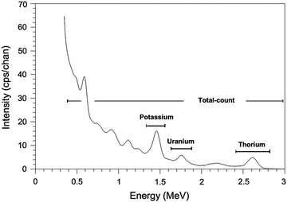
Fig. 2.1
Standard energy windows used for gamma-ray surveys, according to IAEA (2003)
2.2.2 Why Could Gamma-Ray Spectrometry be Helpful for Soil Mapping? The Theoretical Background
Our interest in gamma spectrometry began with a paper presented by Tulyatid and Rangubpit in 2004, who stated that gamma-ray spectrometry can be used for regolith mapping in Thailand. Here, we define regolith as the weathering mantle that occurs underneath soils, where weather and biotic influence are marginal. Using this term, regolith is characterised by the disintegration of parent rock and by weathering processes that change the gamma-ray signal, otherwise the regolith and parent rock could not be distinguished from each other. If the mentioned processes change the signal found in regolith, the same should happen in soils upon which in principle the same processes act. We learned earlier that the three standard elements measured by gamma-ray spectrometry (K, Th and U) show different behaviours in the environment. K is easily liberated by chemical weathering and re-translocated in the landscape, whereas Th is less mobile and tends to occur dispersed, and U tends to locally accumulate and is conditionally redox-sensitive. Therefore, in theory a differentiation in the gamma-ray signal of each should be found, as soil forming processes have a different effect on at least two of the three measured elements. Also, dilution or accumulation of all three elements tends to occur, changing the overall signal when compared to the parent rock. In the following section, we review some important soil forming processes and check their potential influence on the gamma-ray signal.
Organic matter accumulation adds additional material to the soil, and this accumulation normally shows a depth gradient, but no grain-size effect. Organic matter can absorb K, but not in the sense of a specific absorption; therefore, it can be expected that organic matter accumulation will dilute the overall gamma-ray signal. Whether this dilution is detectable depends on the degree of accumulation; for example, low organic matter concentrations (i.e., <2 mass %), as found in many terrestrial arable soils, show hardly any influence, whereas soils dominated by organic matter (i.e., in bogs and H-horizons), or showing thick organic layers on top (O-horizons), significantly attenuate the parent rock signal.
The effect of clay illuviation potentially depends on the type of clay minerals present. The translocation of high activity clays, which normally contain a substantial concentration of K due to their origin from micas, most probably leads to a decreasing K signal in the topsoil (A and E horizon) and an increasing K signal in the enriched horizon (Bt). The effect of the formation of concretions depends on whether a residual or absolute accumulation occurs. A residual accumulation is characterised by lower K, but higher Th and U concentrations, due to the fact that K is more easily leached out of the soil profile under acid conditions. In the case of accumulation due to lateral sub-surface flows, the effect is assumed to depend on the precipitated minerals. Carbonate, anhydrite or silica accretions potentially lead to an attenuation of the overall gamma-ray signal, whereas Fe-oxide accretion probably leads to increased U concentrations if the source region is characterised by a higher share of U-containing minerals. In the case of potassium salt accumulation, K can be assumed to be selectively enriched. These short theoretical reflections show that soil forming processes can change the global gamma-ray signal, as well as the element specific signals found. Consequently, if the influence of a process on element concentrations is sufficiently strong (greater than the accuracy of the measurement) and understood, gamma-ray spectrometry can support soil type and/or property mapping.
2.2.3 Parent Rock Signals in the Northern Thai Highlands
Gamma-ray spectrometry has predominantly been used for rock and mineral prospection. Also for its application with soils, we first need information on the parent rock (background) signal, in order to understand the influence of soil formation on the measured signal. Table 2.1 presents measured values from the study area in comparison to data from Australia, as published by Dickson and Scott (1997). We note that our study data were measured in the natural environment, whereas the Australian data were derived from laboratory measurements.
Table 2.1
Comparison of gamma-ray spectra from parent rocks and their respective soils in (a) the northern Thai highlands (own data, field measurements in Bor Krai), and (b) Australia (as reported by Dickson and Scott 1997, laboratory measurements)
Parent rock (a)
| K [dag kg−1] | eU [mg kg−1] | eTh [mg kg−1] |
|---|---|---|---|
Related soil (a) | Mean ± Std | Mean ± Std | Mean ± Std |
comparison with Australia (b)
| Range | Range | Range |
Freshwater limestone (N = 1)
|
0.1
|
0.7
|
1.4
|
Chernozems (N = 4) |
0.7 ± 0.3
|
2.2 ± 0.6
|
6.1 ± 2.6
|
0.4 − 1.0 | 1.4 − 2.6 | 2.7 − 8.5 | |
Limestone (N = 8)
|
0.3 ± 0.2
|
2.4 ± 1.0
|
5.8 ± 4.9
|
0.0 − 0.6 | 1.1 − 4.3 | 1.8 − 17.2 | |
Carbonates
|
0.0 − 0.5
|
0.4 − 2.9
|
0 − 2.9
|
Alisols (N = 23) |
1.6 ± 1.0
|
4.3 ± 1.0
|
15.3 ± 3.6
|
0.5 − 3.7 | 2.6 − 6.2 | 9.1 − 21.2 | |
Acrisols (N = 17) |
0.6 ± 0.1
|
7.3 ± 1.6
|
27.4 ± 4.7
|
0.5 − 0.8 | 4.8 − 10.2 | 17.6 − 34.0 | |
Ferralsols (N = 7) |
0.4 ± 0.1
|
7.9 ± 1.5
|
26.9 ± 5.0
|
0.2 − 0.6 | 5.7 − 10.3 | 20.5 − 33.4 | |
Umbrisols (N = 7) |
24.9 ± 3.3
|
7.2 ± 1.6
|
24.9 ± 3.3
|
0.7 − 1.0 | 5.3 − 9.3 | 20.0 − 26.8 | |
Claystone, siltstone, mudstone (N = 6)
|
1.9 ± 1.4
|
3.6 ± 1.3
|
13.5 ± 10.0
|
0.5 − 3.3 | 2.1 − 5.1 | 4.9 − 26.2 | |
Luvisols (N = 11) |
2.6 ± 0.7
|
3.9 ± 0.5
|
17.9 ± 3.8
|
1.6 − 3.9 | 3.3 − 5.0 | 13.1 − 24.9 | |
Alisols (N = 23) |
2.3 ± 0.5
|
4.4 ± 1.3
|
16.2 ± 2.8
|
1.4 − 3.0 | 2.8 − 7.8 | 11.1 − 21.0 | |
Umbrisols (N = 9) |
3.0 ± 0.4
|
4.8 ± 0.7
|
16.3 ± 2.1
|
2.4 − 3.5 | 3.5 − 5.8 | 13.6 − 19.9 | |
Sandstone (N = 3)
|
0.5 ± 0.3
|
2.1 ± 0.2
|
5.5 ± 0.9
|
0.2 − 0.9 | 1.9 − 2.3 | 4.5 − 6.2 | |
Arenites
|
0.0 − 5.5
|
0.7 − 5.1
|
4 − 22
|
Soils thereon
|
0.1 − 2.4
|
1.2 − 4.4
|
7 − 18
|
Alisols (N = 29) |
1.3 ± 0.6
|
4.3 ± 1.4
|
15.3 ± 4.5
|
0.4 − 2.3 | 1.6 − 6.9 | 8.8 − 26.1 | |
Acrisols (N = 6) |
0.4 ± 0.3
|
3.4 ± 1.0
|
16.4 ± 3.8
|
0.2 − 0.8 | 1.9 − 4.8 | 10.9 − 21.4 | |
Latite (N = 1)
|
1.7
|
0.9
|
13.1
|
Low-K andesite
|
0.7 − 0.9
|
1.0 − 2.5
|
3 − 8
|
Soils thereon
|
0.8 − 1.5
|
1.2 − 1.5
|
4 − 6
|
Cambisols (N = 4) |
2.6 ± 0.9
|
1.3 ± 0.5
|
13.2 ± 0.3
|
1.6 − 3.4 | 0.7 − 1.8 | 13.0 − 13.7 | |
Luvisols (N = 7) |
1.7 ± 0.4
|
1.6 ± 0.5
|
13.9 ± 0.5
|
1.2 − 2.3 | 1.1 − 2.2 | 13.4 − 14.5 | |
Granite (N = 7)
|
4.8 ± 0.9
|
10.9 ± 6.8
|
21.2 ± 11.5
|
3.4 − 6.4 | 3.4 − 22.5 | 1.4 − 32.5 | |
Granitoids
|
0.3 − 4.5
|
0.4 − 7.8
|
2.3 − 45
|
Soils thereon
|
0.4 − 3.9
|
0.5 − 7.8
|
2 − 37
|
Alisols (N = 4) |
3.4 ± 0.4
|
6.9 ± 0.4
|
23.6 ± 2.6
|
3.1 − 3.9 | 6.5 − 7.4 | 20.1 − 26.1 | |
Acrisols (N = 43) |
2.4 ± 1.4
|
11.8 ± 3.5
|
33.0 ± 11.5
|
0.7 − 5.9 | 7.5 − 20.5 | 16.3 − 57.0 | |
Umbrisols (N = 4) |
4.2 ± 0.9
|
9.1 ± 1.5
|
6.2 ± 1.7
|
3.2 − 5.2 | 7.7 − 10.8 | 3.7 − 7.1 | |
Gneiss, migmatite (N = 6)
|
4.0 ± 1.0
|
9.0 ± 2.9
|
25.9 ± 11.3
|
3.1 − 5.7 | 5.6 − 13.2 | 5.9 − 41.0 | |
Gneiss
|
2.4 − 3.8
|
2.1 − 3.6
|
18 − 55
|
Soils thereon
|
0.7 − 1.9
|
1.6 − 3.8
|
6 − 19
|
Acrisols (N = 17) |
1.1 ± 0.6
|
12.9 ± 4.6
|
33.1 ± 7.0
|
0.4 − 1.9 | 7.5 − 21.0 | 22.1 − 46.6 | |
Cambisols (N = 7) |
3.2 ± 0.8
|
9.6 ± 2.8
|
29.2 ± 4.2
|
2.2 − 4.4 | 5.4 − 12.7 | 23.9 − 36.4 | |
Leptosols (N = 3) |
3.2 ± 0.9
|
7.2 ± 1.6
|
27.5 ± 7.2
|
2.5 − 4.3 | 5.6 − 8.8 | 20.9 − 35.1 | |
Shale (N = 1)
|
3.0
|
4.8
|
15.6
|
Other shales (except Archaean)
|
0.1 − 4.0
|
1.6 − 3.8
|
10 − 55
|
In northern Thailand, the highest gamma-ray readings occurred with granites and were associated partly with metamorphized rocks (such as gneiss and migmatite). This concurred with the findings of Dickson and Scott (1997: 188), who concluded that “…there is a trend for increasing radioelement content with increasing Si content, i.e., felsic rocks have a higher radioelement content than ultrabasic and mafic rocks…”, as underlined by the latite readings from Thailand. The concentration in clastic sediments seemed to be related to the dominant grain-size class; sandstones and related rocks showed, on average, lower concentrations than siltstones and claystones. Extremely low K values were recorded for limestone, which is by definition (>75 mass % carbonate) poor in K bearing silicates. Measurements from Thailand did not always match with the ranges found in Australia, a fact which may be attributed to regional differences in terms of geochemical composition. Here, it must be stated that globally reported data are still relatively scarce (due to political, economic and security reasons), and that the grouping of data according to rock types is therefore arbitrary.
In conclusion, more standardised data on gamma-ray rock signatures are required. The differences in rock types lead to the assumption that also soils that strongly depend on rock type (i.e., azonal soils like Leptosols, Regosols) or secondary enrichments (Calcisols, Gypsisols) can potentially be distinguished via gamma-ray spectrometry.
2.2.4 Influence of Soil Forming Processes on the Gamma-Ray Signal: Case Study in Bor Krai Village, Thailand
The Bor Krai case study represents the most intensive village level study of soils in the northern Thai highlands. The reason is the existing petrographic diversity in terms of limestone, marls, claystone and latite (a basic magmatite), plus the presence of hydrothermal formations rich in aluminium-hydroxides. Table 2.1 shows the gamma-ray signals for soils in contrast to those of the supposed parent materials. The dominant parent material according to the geological map is Permian limestone. Limestone is rich in carbonates, but poor in silicates and other minerals, the latter of which can lead to a strong gamma-ray signal. As a consequence, the limestone signals here were weak, especially for K and Th. However, eU concentrations were higher than for the latite. This relatively high U radiation might be related to the existence of uranyl carbonates like liebigite (Ca2(UO2)(CO3)3*11H2O). Freshwater limestone tended to show even lower values since its formation depends on the re-precipitation of dissolved carbonate.
Typical soils around the local springs, those which caused the freshwater limestone to occur, were Chernozems, and these soils showed lime concentrations between 53 % and 57 % and organic matter concentrations between 2 % and 10 %. In the strictest sense, Chernozems do not develop from freshwater limestone but depend on secondary lime enrichment around springs, which is why the soils here showed a higher signal than the pure freshwater limestone. The diluting effect of freshwater-lime is underlined by the model calculation that follows. Combining the freshwater limestone signal with the signal from local Alisols (Alisol representing a relative young decalcified weathering product), and using weighting factors of 0.7 and 0.3 respectively, the resulting signal approximated the one measured for Chernozems (K 0.6, eU 1.8, eTh 5.6 for Alisol from limestone; K 0.7, eU 1.8, eTh 5.9 for Alisol from claystone).
The higher concentration in the limestone derived soils in comparison to the parent material was dependent on another process. These soils developed from the limestone dissolution residue, which was comprised predominantly of layer silicates (54 % illite and 12 % kaolinite), quartz (27 %), feldspar (albite 5 %) and oxides (hematite 3 %). On limestone sites, good drainage is assured, which is the reason why we found only Alisols (high activity clays inherited from the limestone dissolution residue, but with a low base saturation) but no Luvisols, as in the claystone series. The high proportion of illite in the limestone dissolution residue was the reason for the high K signal generated by the Alisols. What is remarkable is that the ratio between the Alisol and limestone signals was different for each element. Though variability in the limestone dissolution residues might have contributed to this, it is a hint that leaching might have contributed to the loss, especially of U. This appears logical assuming U is predominantly present as carbonate in the limestone. In solution above pH 5.5, the preferred ligand of U is carbonate (Unsworth et al. 2002), so that both components are leached together. As soon as a decalcified solum is established, U tends to residually accumulate, while potassium-bearing minerals are decomposed in the acid environment and K is leached out of the profile. In line with these processes, the K signal should decrease (loss of silicates) and U and Th signals should further increase in Ferralsols, as the final well-aerated weathering product. However, the latter was not found to occur for Th, due to the fact that Ferralsols developed in this environment only in the vicinity of hydrothermal pipes (Herrmann et al. 2007), which contain a high proportion of aluminium-hydroxides. Consequently, they developed from a mixture of parent materials. Umbrisols in the limestone domain represented an intermediate soil with respect to the intensity of gamma-ray emissions. These soils tended to appear in sinkholes, and thus represented a mixture of colluvial material from the surrounding slopes.
Dominant soils from claystone (Luvisols, Alisols) showed the expected decrease in potassium due to silicate weathering, but increasing U and Th concentrations due to residual accumulation. The stronger accumulation of Th was again a hint of the higher level of mobility of U in this environment. The high K and U radiation levels measured in the Umbrisols on claystone might have been due to either local inhomogeneities related to topography or grain-size selective erosion and transport, and this requires further research. Soils from the latite showed the expected trends in the weathering sequence from Cambisol to Luvisol, but unexpected ratios in relation to the supposed parent material, especially for K. The latite here is only a small magmatic intrusion and was only sampled once. Thus, the unexpected differences found might be attributed to parent material in-homogeneity.
In conclusion, the gamma-ray signal of soils is first of all inherited from the parent material, and with continuing soil formation, the signal changes. Secondary carbonate accumulation dilutes the signal, whereas silicate weathering leads to decreasing K concentrations due to leaching, whereas the U and Th signal increases to a different degree depending upon the residual accumulation. U appears to be more mobile than Th, especially at a neutral to alkaline pH (carbonate buffer range).
2.2.5 Gamma-Ray Signals at the Soil Profile Scale
Here, we exclusively deal with Reference Soil Groups, as characterised by clay illuviation, since they dominate with respect to surface coverage. Of interest is the question as to whether clay illuviation and chemical weathering change the signal at the surface and whether gradients are detectable within soil profiles. Based on the above mentioned results, one can hypothesize that clay illuviation leads to a maximum K gamma-ray signal in the Bt-horizon and that the K signal of soils with low activity clays will be lower. Figure 2.2a shows that from our study, the Reference Soil Groups for high activity clays (Alisol, Luvisol) showed a clear depth gradient, with K values below 2 % in the topsoil and approximately 3 % below 1 m in depth. The incremental increase with depth was rather linear. The comparison with potassium values measured at the soil surface leads to the conclusion that the gamma-ray signal integrated over larger depths (at least 0.5 m). On the other hand, Acrisols with low activity clays showed lower average values and no depth trends at all, but rather a fluctuation around an average value, which was also reflected in the surface measurement (0.7 and 1.1 % K).
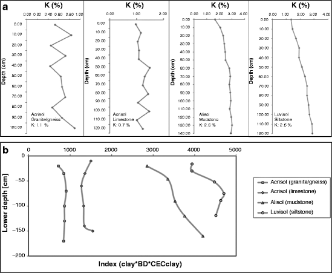
Fig. 2.2
(a) The potassium surface and soil profile gamma-ray signal of clay illuviation type soils in Bor Krai village, northern Thailand. (b) The K gamma ray depth pattern can be explained by combining the factors’ clay concentration and bulk density with the potential cation exchange capacity of the clay fraction (LAC, HAC low and high activity clay respectively)
Texture differences alone are not able to explain the K signal with depth, since they always showed a maximum clay concentration between 0.4 and 0.8 m down. However, with the clay concentration converted into mass when multiplying it by bulk density and assuming unity volume, and with the clay mineral quality integrated via a multiplication with the potential cation exchange capacity of the clay fraction, then the different depth trends and the differences in magnitude of the K measurement between high and low activity RSGs could be qualitatively reconstructed (Fig. 2.2b). For a better quantitative assessment, the bulk mineral composition, including the share of K bearing feldspars, would be needed.
In conclusion, clay illuviation and chemical weathering influence the gamma-ray signals produced, especially by K. Portable gamma-ray spectrometers can be used in order to distinguish low and high activity clay profiles, if analysed reference profiles are available.
This means at the same time that gamma-ray spectrometry can semi-quantitatively measure the cation exchange capacity (CEC), which is used as a diagnostic criterion for the differentiation of clay illuviation type RSGs in the World Reference Base for Soil Resources (WRB). By adding a field pH-meter – for approximating the base saturation – as a second important diagnostic criterion, all illuviation type RSGs (Luvisol, Alisol, Lixisol, Acrisol) can be classified in the field.
2.2.6 Gamma-Ray Signals at the Landscape Scale
The multiple possibilities that gamma-ray spectrometers offer, from its handheld to airborne versions, make this technology suitable for mapping at several different scales. Along dirt roads, cars can be used, while rugged terrain can be accessed using helicopters and larger areas mapped from aircraft. However, the question arises: what can be mapped? The literature looks at soil properties, soil related processes and soil mapping. For example, Anderson-Mayes (1997) and Dent (2007) reported on salinity mapping, Pracilio et al. (2006) approached texture, and Beckett (2007) worked on soil porosity and density. Dickson et al. (1996) studied erosion, Gunn et al. (1997) investigated land use and degradation using this method, and finally Cook et al. (1996), Bierwirth and Brodie (2005) and Wilford and Minty (2007) worked on soil type mapping. All these studies detected a more or less good correlation between the subject studied and radiometric measurements. However, most also treated this phenomenon statistically for prediction purposes, without making an effort to understand why there was a correlation, i.e., to understand the radiometric response to material properties in a mechanistic sense, plus they used exclusively surface measurements. However, gamma-ray data can only be fully utilized if the factors influencing the radiometric response are understood. Using an inverse argument, we can state that all the properties which can be predicted with the help of radiometric data also have an influence on the gamma-ray signal. Their quantitative impact and cross-over effects need to be determined in more detail in the future. In the following sections, we want to concentrate on the experiences gained with soil type mapping at the landscape and regional scales in the upland areas of northern Thailand.
Landscape scale mapping of Reference Soil Groups and the correlation between ground-based and airborne data: Soil mapping at present means first of all soil type mapping, since the idea of a soil type is directly related to soil forming processes and properties. For regional to global applications in the future, i.e., for predicting climate change effects, single properties will receive more emphasis. In the World Reference Base for Soil Resources (IUSS Working Group WRB 2006), used for worldwide correlation purposes, soil types are grouped into so-called Reference Soil Groups (RSGs). In the northern Thai highlands, RSGs prevail, as predominantly characterised by clay illuviation (Schuler 2008). In the WRB, these are differentiated by the base saturation and cation exchange capacity of the clay fraction. While a relation exists between pH and base saturation, so far no field approaches have existed to determine or estimate the CEC, except for very crude approaches based on clay and organic matter concentrations. The WRB sets a sharp threshold at 24 cmol(c+) kg−1 when separating “high and low activity clays”. This value has classificatory force, since it separates the high activity clay illuviation RSGs (Luvisol and Alisol) from the low activity clay illuviation RSGs (Lixisol and Acrisol). Where both types occur in one landscape, no field separation has been possible so far, but expensive analytics are necessary in principle for each single auger. Coming back to what has been shown with respect to gamma-ray signals at the soil profile scale, gamma-spectrometry has the potential to separate these RSGs, particularly due to the fact that high activity clays contain higher amounts of K due to their higher concentrations of illite and vermiculite plus smectite type clay minerals. Therefore, for a number of soil profiles and augering sites in the Bor Krai area radiometric measurements and CEC analytics were executed (Fig. 2.3).
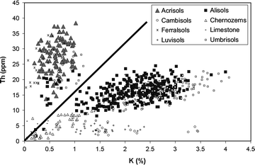
Fig. 2.3
Separation of Acrisols and Alisols using the Th/K ratio (Th = 16 K), as measured by ground-based gamma-ray spectrometry in the Bor Krai catchment, northern Thailand
The results revealed that Alisols (high activity clay RSG) could be separated from Acrisols (low activity clay RSG) by means of the Th to K ratio, a finding which depended on the fact that K leaves the soil system via leaching over time, and K bearing clay minerals like illite are transformed into potassium-free clay minerals like kaolinite, leading to lower K-Th ratios. The separation line for the ground-based measurements was eTh = 16 K. Using this criterion for field mapping, some Alisols were still classified as Acrisols. According to our analytics, these were transitional soil profiles with CEC clay close to the separation criterion of 24 cmol(c+) kg−1. Taking into account the analytical accuracy of the CEC method (CV 11 %, Herrmann 2005), these results lie within the error range.
As a consequence, we can use, at least in the Bor Krai area, field gamma-ray data for the separation of high and low activity clay RSGs (especially Alisols and Acrisols). Combining the whole field description, including pH and bulk density, with gamma-ray data, further RSGs can be separated (i.e. Luvisols and Ferralsols). Also, early results from Germany (unpublished) indicate that the above mentioned eTh/K separation criterion for ground-based measurements works there and thus might have a global validity.
For applications to greater areas, the question arises as to whether this separation criterion is also valid for airborne measurements. Therefore, the airborne transects in Bor Krai were re-sampled with ground-based measurements (Fig. 2.4). The results showed, in principle, a good correlation between airborne and ground-based data, but that a general shift of airborne data towards lower K values appeared. This fact can be explained by a greater distance to the measured surface and perhaps also attenuation by the vegetation. Further deviation between airborne and ground-based measurements was caused by the integration of the signal from a greater surface when using airborne measurements, and the routine smoothing of airborne data (IAEA 2003) by different statistical approaches. As a consequence, the separation criterion shifted from eTh = 16 K (ground-based) towards eTH = 12.5 K for the airborne data. This systematic shift thus needs to be taken into account when applying airborne data. Whether further spatial variation of the airborne criterion has to be considered, e.g., due to differences in vegetation or land use, needs further research (Schuler et al. 2011).
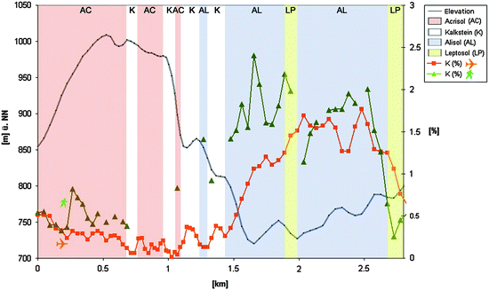
Fig. 2.4
Correlation of ground-based and airborne gamma-ray signals on a transect in Bor Krai, northern Thailand
Regional scale use of radiometric data for concept soil map establishment: As stated earlier, soil and other baseline information is scarce in relation to the northern Thai highlands. Apart from topographic (and derived) information, radiometric data represents that with the highest density of sampling points and additionally a systematic transect-based sampling. As a result, radiometric data was used as one of the information layers in the concept soil map, based on a statistical approach. In this case, a random forest approach was chosen (see Sect. 2.3).
The Gini index, representing the relative influence of data layers on map development (Fig. 2.5) showed that only two data groups had a dominating influence: i. radiometric data – with K radiation having the greatest influence, and ii. topographic data – with absolute topographic height above sea level dominating. On the other hand, parent material exerted only a minimal influence, and this result needs to be explained. Obviously, data density was an important determinant of this result. Since only limited soil mapping data were available – which did not cover all the parent rock types to be found in the northern Thai highlands, the petrographic data layer had to be further generalised based on an existing map which had a relatively low resolution (German Geological Mission 1979, 1:250,000). As a consequence, the parent material as a data layer covered the whole area, but in fact showed the lowest diversity (only categories) and the lowest data density.
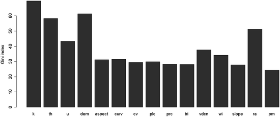
Fig. 2.5
Gini index of all potential predictors used for the establishment of the regional soil map of Northern Thailand. Where k potassium, th thorium (equivalent), u uranium (equivalent), dem elevation, aspect aspect, curv curvature, plc planform curvature, prc profile curvature, tri terrain ruggedness index, vdcn vertical distance above channel network, wi SAGA wetness index, slope slope, ra relative altitude and pm parent material
If only data density were playing a role, topographic information would have had the highest weighting in terms of developing the map, which was the case, but radiometric data had a slightly higher influence. This was due to the following reasons: (1) radiometric data allowed the direct identification of RSGs, while (2) topographic data were a surrogate for the climatic water balance (ratio of rainfall and evapotranspiration as an indicator for the leaching rate), allowing us to establish dominance rules depending on the parent material and geographic position. In the Bor Krai limestone area; for example, Acrisols dominate over Alisols with increasing topographic height, while Cambisols dominate over Acrisols in the highest landscape positions in the granitic Mae Sa watershed. In conclusion, data density plays an important role when using the random forest approach to develop soil maps, as does the discriminative quality of the data used. This exercise showed that in this respect, gamma-ray spectrometry has a good potential, which should be further exploited in the future.
2.2.7 Conclusions and Outlook Regarding Gamma-Ray Spectrometry
The soil mapping studies here showed that the dominant and characteristic soil forming process in the northern Thai highlands is clay illuviation. Since gamma-ray signals integrate over only a limited depth, clay illuviation changes the signal of the soil profiles due to different clay mineral compositions, by decreasing the K concentration of the topsoil to different degrees. As a consequence, the K-Th ratio measured at the surface can be used to distinguish the dominant Reference Soil Groups (Acrisols, Alisols). At the soil profile scale, the K gamma-ray signal depth gradient can be reconstructed by combining the clay concentration, bulk density and potential cation exchange capacity of the clay fraction. At the landscape scale, >80 % of soil augerings can be attributed to WRB Reference Soil Groups using field methods and with hand-held gamma-ray spectrometry included, the latter thus reducing the need for and costs of laborious analytics. A systematic signal shift occurs between ground-based and airborne measurements. Therefore, algorithms for soil mapping have to be adapted when shifting between scales. At the regional scale, gamma-ray information can be seen as the most important criterion to use for establishing concept soil maps in the northern Thai highlands. In conclusion, gamma-ray spectrometry can be used to assist in Reference Soil Group identification at the watershed scale, and has potential on a regional scale too. Though there are indications that general algorithms might be used for clay illuviation type RSG mapping worldwide, not all factors that influence the quantitative gamma-ray signal are understood; therefore, more deterministic studies are required.
2.3 Comparison of Medium Scale and Scale Independent Soil Mapping Procedures in Northern Thailand for Soil Data Generation in a Development Oriented Context
For the highlands of northern Thailand, insufficient soil information is available to support sustainable land use planning activities, with more detailed soil information only available for the lowlands.3 The General Soil Map of Thailand (Vijarnsorn and Eswaran 2002) at 1:1 M scale, is so far the only map to cover the whole of northern Thailand, but the fact that it almost exclusively represents an undifferentiated “slope complex” (Fig. 2.6) underlines the need for more refined soil data to be developed. Due to financial and time restrictions, comprehensive and intensive field surveys are often difficult to achieve; hence, scale adapted and integrated mapping strategies are usually required. In this study of northern Thailand carried out at the landform scale (>1:100 k), soil mapping was performed based on (a) the catena approach, (b) grid-based randomized mapping, and (c) by eliciting indigenous knowledge. In order to assess those tools with potential for up-scaling, maximum likelihood, classification tree and random forest algorithms were also tested, since they are in theory scale-independent.
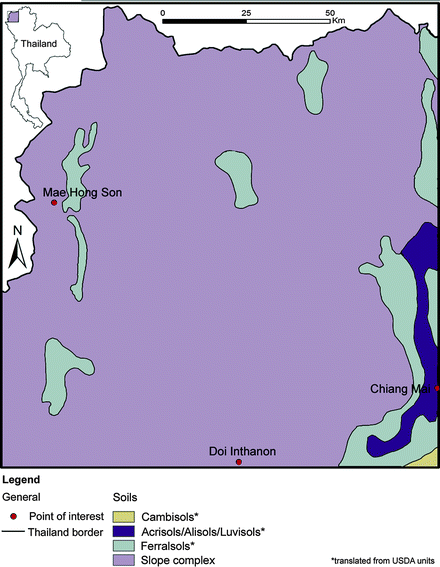
Fig. 2.6
Soil map of north-western Thailand classifying most of the mountainous areas as “slope complex” (Vijarnsorn and Eswaran 2002) and showing the state-of-the-art situation prior to this study
2.3.1 Material
Research areas: In order to cover the major lithological units of northern Thailand as they are depicted in the medium-scale geological map (1:250,000; German Geological Mission 1979), soil mapping was performed at the three research sites: the Bor Krai area – which mainly consists of limestone and claystone, the Huai Bong area – which is dominated by sandstone, and the Mae Sa (Mai) area – which is represented by granite and gneiss.
Spatial legacy data: Digitized topographic, geological and land use maps, aerial photographs, as well as LANDSAT and SPOT images, were used as baseline information for the field surveys. The topographic map, as compiled by the Royal Thai Survey Department (1976), has a scale of 1:50,000 and contour lines with 20 m intervals. This map was geo-referenced and digitized for use as a baseline. The geological map has a scale of 1:250,000 and was compiled by the German Geological Mission (1979), while the aerial photographs have a scale of 1:15,000 and were provided by the Military Map Department. The LANDSAT 7 ETM + image was provided by the Global Land Cover Facility, or GLCF (GLFC 2007), and was taken on March 5th 2000. The three SPOT 5 images were provided by Geo-Informatic and Space Technology agency, or GISTDA (GISTDA 2007). The image covering the Mae Sa Mai area was taken on November 6th 2006, the image for Huai Bong was taken on February 22nd 2007 and the image for Bor Krai was taken on December 1st 2006. The LANDSAT 7 image consists of 8 different bands, while the SPOT 5 image consists of 4 different bands. During the field trips, a hand-held Garmin GPS III was used to obtain coordinates of the observation points. The evaluation of the field and laboratory data was carried out with the following software: MS Access 2003, ArcView 3.3 and ArcGIS 9.1.
Soil data base: Point data containing soil information were transferred into a database (Soil Database Thailand, see excerpt in Table 2.2). The database structure followed mainly the SOTER manual (FAO 1995), including site descriptions of investigation points in the profile table. This table was linked with the horizon table, where descriptions and properties of soil horizons were stored. Linking the database with soil maps enabled the generation of application maps in order to provide information of public interest, such as the sensitivity to soil erosion or the landslide hazard in a given area.
Table 2.2
Excerpt from Soil Database, Thailand. State: 01.02.2012
Parent rock | Soil profiles (n) | Auger (n) |
|---|---|---|
Granite | 108 | 63 |
Latite | 2 | 1 |
Gneiss, migmatite | 56 | 131 |
Slate | 4 | 13 |
Marble | 7 | 22 |
Conglomerate, breccia | 2 | 27 |
Sandstone | 24 | 120 |
Siltstone, mudstone, claystone | 16 | 103 |
Limestone | 15 | 229 |
2.3.2 Mapping Approaches at the Landform Scale
Landforms are here defined as entities of parent rock with a similar topography.
Catena approach: For each study area, soil maps (1:50,000 scale) based on transect sampling were created. In order to detect rules for soil distribution, the transect lines aimed to cover the different soil parent materials, geomorphic units and land use types in the respective areas. The number of sampling points used for transect mapping was 72 in Mae Sa Mai (10.5 km2), 62 in Huai Bong (6.8 km2) and 58 in Bor Krai (8.5 km2).
Grid-based randomized mapping: The grid-based randomized sampling approach used was a modification of the random sampling approach used by Weller (2002) in tropical southern Benin. In order to cover all landforms, topographic positions and lithological units, a grid was laid over the research area and three sampling points were randomly selected per grid cell. The Bor Krai site was chosen to conduct a pilot study (Fig. 2.7). Soil samples were taken at 57 independent points.
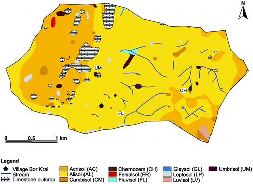
Fig. 2.7
Example soil map of the study area in Bor Krai, generated using the randomized grid-based approach
Indigenous knowledge approach: Indigenous soil knowledge, drawing on the expertise of local stakeholders, mainly farmers in Mae Sa Mai, Huai Bong and Bor Krai, was also used. The elicitation of farmers’ soil knowledge was based on the Participatory Rural Appraisal (PRS) tool (Chambers 1992), and included the use of semi-structured interviews, field and key informant interviews, participatory mapping, group discussions and field walks. The survey was conducted during the dry season (October to May) in 2004/2005 in Bor Krai (Schuler et al. 2006), during which time experienced farmers were asked to say what criteria they use to distinguish soil types. Soils on sites chosen by the farmers were sampled and described according to both the local classification and the World Reference Base for Soil Resources (IUSS Working Group WRB 2006). Next, farmers were asked to rank the different soil properties of the local soil types, covering crop suitability, fertility, infiltration rates, erosion hazards and topsoil thickness. These indigenous soil types were then mapped using aerial photographs, a 3D topographic model and topographic maps as communication tools.
Scale independent mapping approaches – Maximum likelihood approach (applied at the watershed scale): The available predictors were elevation, slope inclination, curvature, aspect and petrography, as well as LANDSAT 7 (bands 1–8) and SPOT 5 (bands 1–4) data. Soil types representing more than 1 % of the respective investigation area were considered in the analysis (Schuler et al. 2010). Principal component analysis using the PAST 1.81 software was conducted in order to reduce the number of input raster data layers, leaving those with the highest explanatory value for the given soil data. Afterwards, the maximum likelihood approach was applied for all the major soil types, using training points and applying the “sample function” to extract the corresponding predictors. In order to enable reliable maximum likelihood based soil predictions, additional sampling points were used, the number of training points being 302 in Bor Krai, 165 in Huai Bong and 163 in Mae Sa Mai. To test whether this approach would perform well with a reduced dataset, 25 sampling points were distributed among the local soil units. In order to up-scale from the Mae Sa Mai training area to the whole of the Mae Sa watershed, 31 additional training points were used, because some mapping units did not occur within the smaller training zone, such as large water bodies and urban areas, which instead were identified using the SPOT 5 satellite image. In the output raster of this supervised classification, each cell was assigned to a soil type based on the highest probability. With the class probability function of ArcGIS 9.2, maps were produced showing the probability of a single soil type occurring in a respective study area.
Scale independent mapping approaches – Classification tree approach: Classification tree-based soil maps using the CART algorithm (Breiman et al. 1984) were produced for all the research areas and for the whole of north-western Thailand (Fig. 2.8). The classification trees were generated using SPSS 16.0 (using the following settings: algorithm CART, parent node: 5, child node: 2 and pruning: none; growing method: CRT). The input data used were elevation, slope, curvature, aspect and petrography, plus LANDSAT 7 (bands 1–8) and SPOT 5 (bands 1–4) data extracted at all the training points.
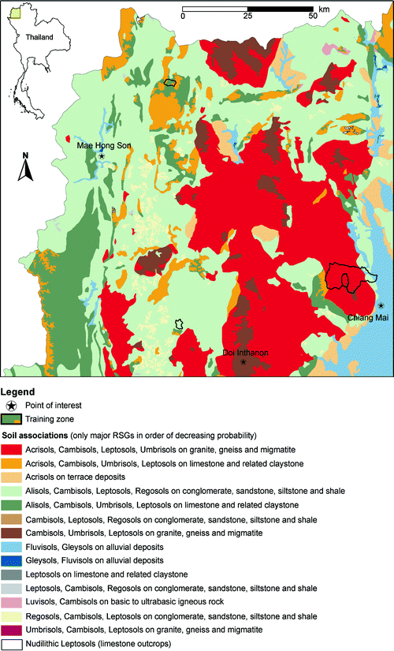
Fig. 2.8
Soil map of north-western Thailand produced using classification tree algorithms and the SOLIM approach
Scale independent mapping approaches – Random forest approach: ‘Random forest’ is a classification method which consists of several different, uncorrelated decision trees, all of which are developed under a certain kind of randomization during the learning process. For a classification, each tree must make a decision in this forest and the class with the most votes will decide the final classification (Breiman 2001; Tin Kam Ho 1995). A random forest-based soil map was produced for whole of north-west Thailand, with an R-script developed using the package “randomForest” (Liaw and Wiener 2002) in addition to the package “RODBC” (Ripley 2012). The used input data comprised a 20 m elevation contour line map (Royal Thai Survey Department 1976), airborne gamma-ray point data (K, eTh, eU) provided by DMR, a geological map at the 1:250,000 scale (German Geological Mission 1979), and point information on the reference soil groups for three different petrographic areas (Schuler 2008), these being Bor Krai (392 points), Huai Bong (201 points) and Mae Sa watershed (226 points). SAGA 2.0.8 software was used to compute a Digital Elevation Model (DEM) from the contour line map and to derive raster maps of 20 m resolution for elevation, slope, aspect, curvature, profile curvature, planform curvature, the convergence index, aspect, relative altitude, the SAGA wetness index and the vertical distance above the channel network. The same software was also used to produce raster maps of a 50 m resolution for K, eTh and eU using universal kriging with relative altitude as the covariate. Relative altitude is a terrain parameter which determines altitude differences within a large (here 50 km) search radius when compared to each grid cell. This terrain parameter was computed with a SAGA module by SciLands GmbH. Based on a modified FAO-parent material classification (FAO 2006), the geological map was converted into a parent material map and gridded to a 50 m resolution. Finally, all predictor grids were re-sampled to a 50 m resolution and transferred as application data to a PostgreSQL database. Data were then extracted at the location of all the training points and also introduced into the PostgreSQL database. Subsequently, the training data of all the predictor grids were fitted to the random forest model, and the Gini-index of the predictors was computed. This index represents a measure of the total decrease in node impurities occurring due to a splitting of the variables, averaged over all the trees. Afterwards, the model was fitted to the most important predictors (highest Gini-indices) and applied to the dataset covering the whole area, then the probability for each reference soil group was computed. The probabilities for each RSG were gridded to a 50 m resolution and clustered using SAGA. The resultant soil map displayed soil associations of the most important RSGs in the region (Fig. 2.9).
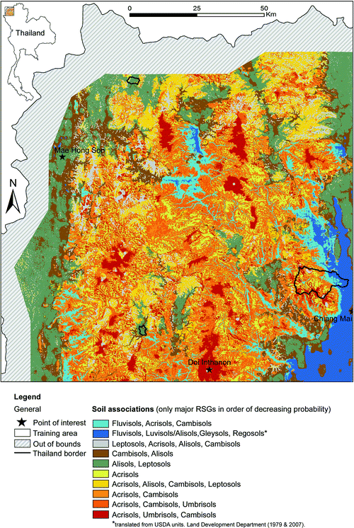
Fig. 2.9
Soil map of north-western Thailand produced using random forest modeling in the statistics program R
Validation: Soil maps, based on transects, grid-based randomization, maximum likelihood and classification trees, were validated by comparing them with the reference soil maps and independent sampling points. The reference maps included the maximum amount of information available – that drawn from soil catenas, sampling points along local trails, areas of low point density or high soil variability, reference profiles, LANDSAT and SPOT images, and topographic information. The reference soil maps were manually created based on expert knowledge and using ArcGIS 9.2. In addition, for each area 15 % of all the sample points were randomly selected as validation points and exclusively used for this purpose, resulting in 55 for Mae Sa Mai, 30 for Huai Bong and 55 for Bor Krai. In addition, re-classified radiometric data were used for validation in Bor Krai. A validation of the regional map is currently ongoing using a regional transect (Warber 2008), as well as selected watersheds.
2.3.3 Results
Reference soil maps: For more than 75 % of the mapping points, clay illuviation was identified as the dominant soil forming process, with soils mainly classified as Alisols and Acrisols. Less frequent RSGs found were Cambisols, Umbrisols and Regosols, while the remaining soil types mapped (Anthrosols, Chernozems, Ferralsols, Fluvisols, Gleysols, Leptosols and Technosols) each represented less than 2 % of all the sampling points. The reference soil maps revealed that soil cover in the granitic Mae Sa Mai area is dominated by Acrisols (84 %), followed by Cambisols (9 %), Umbrisols (4 %) and Technosols (2 %). Anthrosols, Chernozems, Gleysols, Leptosols, and water bodies are present in the remainder of the area. In contrast to Mae Sa Mai, Alisols prevailed in the Huai Bong sandstone area (77 %), followed by Cambisols (13 %), Regosols (9 %), Leptosols (2 %) and Fluvisols (0.1 %). In Bor Krai, in limestone and claystone areas the predominant mapping units found were Alisols (64 %), Acrisols (27 %) and nudilithic Leptosols (limestone outcrops – 5 %), while Cambisols, Chernozems, Ferralsols, Fluvisols, Gleysols, Leptosols, Luvisols and Umbrisols each comprised less than 1 %.
Local knowledge-based soil maps: The study’s elicitation of local knowledge revealed that farmers had a good knowledge of the local soil diversity, with soils differentiated according to soil color in all three areas. In Mae Sa Mai, the six different local soil types were classified using topsoil thickness as a criterion also, and in Huai Bong, the five local soil types were identified based on topsoil thickness and stone content. Finally, in Bor Krai, eight different soil types could be distinguished, with bulk density used as an additional criterion. All the local soil maps produced provided an overview of the respective main soil types, plus background information on each local soil type such as crop suitability, water infiltration and erosion risk, as provided by the farmers. The mapping of local soils and their properties was the cheapest and most rapid method to use, but the quality and quantity of local knowledge varied among the villages.
Soil maps-based on the catena approach: All catena-based soil maps showed a very high correspondence with the respective reference soil maps, with validation of the independent sampling points yielding the following matches: 80 % in Mae Sa Mai and Bor Krai, and 83 % in Huai Bong. In all cases the major soil types were classified correctly.
Randomized grid-based soil maps: The randomized grid-based soil mapping for Bor Krai revealed 97 % correspondence with the reference soil map and a positive match for 76 % of all independent sampling points. As seen in the transect approach, minor units (Chernozems, Ferralsols, Fluvisols, Gleysols) located between the randomized sampling points were not detected (Fig. 2.7).
Maximum likelihood-based soil maps: The level of correspondence with the reference map was high throughout, showing an 81 % match in Mae Sa Mai and Bor Krai, and a 71 % match in Huai Bong, while validation with the independent sampling points revealed a match of 70–71 % at all the sites. Validation of the maximum likelihood-based soil map in the Mae Sa watershed, but outside the Mae Sa Mai sub-area, using 30 independent sampling points, revealed a positive match in 87 % of all the 30 cases. In the pilot study area of Bor Krai, where only 25 sampling points had been distributed among the local soil units (using a minimal sampling point approach), the classification accuracy was 80 %, while during validation 71 % of soils were classified correctly. Due to their limited spatial coverage and poor definition, Chernozems were not predicted for Mae Sa and Fluvisols not for Huai Bong. The preselection of major variables using principal component analysis was essential for the maximum likelihood classification and greatly improved the results. For all three areas, principal component analysis identified aspect, petrography, slope and the SPOT 5 bands 2 and 4 as being the most important predictors – explaining most of the observed variance, such as 82 % in Mae Sa Mai, 78 % in Huai Bong and 92 % in Bor Krai. In addition, in Mae Sa Mai, SPOT 5 band 3 and in Huai Bong, LANDSAT 7 bands 5 and 7 were essential. In Bor Krai meanwhile, LANDSAT 7 bands 5 and 7 as well as elevations were also important.
Classification tree-based soil maps: The level of correspondence between the classification tree-based soil map (1:50 k scale) and the site specific reference maps was satisfactory throughout, with a 79 % match for Mae Sa Mai, 70 % for Huai Bong and 84 % for Bor Krai, while validation of the independent sampling points showed a matching range of 73–77 % for all the sites. The advantage of the classification tree approach is the ability to develop rules for the occurrence of predicted units; for example, in Mae Sa water bodies split off from other mapping units due to high values in SPOT band 3 and low values in SPOT band 4, whereas Technosols were identified via a combination of high values in SPOT bands 3 and 4, and LANDSAT band 1, and low values in LANDSAT band 4. In Huai Bong, Alisols prevailed on sloping land under forest cover (low SPOT band 8 values), while Cambisols were found mostly on flat areas with sandstone, claystone or alluvial deposits; or on cultivated (high SPOT band 8 values) south to west facing sloping land. Derived mapping rules for the most important soil types in Bor Krai were as follows: Acrisols dominate between elevations of 834–886 m.a.s.l., with limestone, mudstone or iron ore as the parent rock materials and a slope inclination of less than 18°. Alisols occur mostly between 566 and 834 m.a.s.l., with limestone, mudstone or iron ore as the parent rock materials. Luvisols occur above 834 m.a.s.l. on latite, while Chernozems and Fluvisols prevail on freshwater limestone or alluvial deposits, with Chernozems above 734 m.a.s.l. and Fluvisols below this benchmark. A map for the entire north-west of Thailand could be produced using this information (Fig. 2.8), but sound validation is still lacking.
Random forest-based soil maps: The random forest model for all the predictor grids revealed the highest Gini-index values for K (69.8), elevation (61.4), eTh (58.2) and relative altitude (51.4). Lower values were detected for eU (43.4), vertical distance to a drainage network (37.7), the wetness index (34.0), curvature (31.6) and aspect (31.2). Gini-index values for the gamma-ray data stressed the high level of correlation between radio-element concentration and soil development, while the low index values for the parent material could be explained by the strong generalization degree of the geological map. The resulting soil map (Fig. 2.9) reveals the clear dominance of Acrisols in higher elevation areas and for consolidated siliceous acid igneous and metamorphic parent materials. In limestone areas, Alisol soil associations dominate at lower elevations and pass over in Acrisol dominated areas at higher elevations. Sandstone areas are clearly dominated by Alisols, with the occasional occurrence of Leptosols. Due to a lack of training data – as this study focused only on previously rarely studied upland soil associations – it was not possible to further specify soil associations for the lowland areas. Here, expert knowledge was provided by Dr. Chaiwong from Maejo University (personal communication) in northern Thailand, plus the Land Development Department (1979, 2007). Additional mapping activities will therefore be needed in this area for validation purposes. A comparison between the classification tree and the random forest approach for the Bor Krai area revealed that the random forest approach is more accurate and requires less training points.
2.3.4 Discussion
Six mapping approaches were tested in order to evaluate their strengths and weaknesses when applied to northern Thailand. At the landform scale, transect sampling-based soil mapping delivered the best results, but also required the highest sampling point density to achieve a high level of accuracy. However, this was anticipated, since the respective reference soil maps were predominantly based on transect information. The high “type 2 errors” (areas of known RSG X that are incorrectly classified as anything else – also called ‘errors of omission’ or ‘false negatives’) with respect to the prediction of minor soil types, showed that only the transect method could detect the major soil types. The disadvantage of this method is its restriction to smaller areas if a particular point density is required, and the difficulty often experienced in selecting the optimum distance between transect lines.
The grid-based randomized sampling approach showed similar inherent difficulties, with the main problems being the choice of an appropriate grid size and the minimum number of randomized points per grid cell requiring ex-ante knowledge of local soil variability. The concept of this approach assures an objective mapping of the main soil types and properties, and the irregular distances set for the sampling points might also be an advantage for geo-statistical approaches based on kriging. Again, a high number of “type 2 errors” for the minor soil types occurred here, suggesting the same weakness as seen in the catena approach. A technical problem experienced here was the location of the preselected random points in often steep and inaccessible terrain.
The local knowledge-based soil mapping approach proved to be very rapid and cost efficient, though the boundaries between mapping units often did not correspond with those on the WRB soil map, because local people applied different criteria according to their needs and concerns. Classification may even vary within villages (Schuler et al. 2006) depending on the informants and approach used, making validation as vital as with other mapping approaches. Nevertheless, local soil maps provide a good overview about soil type and soil property diversity, and are suitable as the basis for reconnaissance surveys, land-use planning and to feed expert systems, plus facilitate optimal grid size selection, sample point density and the selection of transect distance for the other mapping approaches.
The maximum likelihood-based maps used showed a high level of correspondences with the reference soil maps and the independent sampling points, with at least a 70 % level of correct matches found. The high number of errors among less common soil types indicated that this method is at the moment only applicable for major soil types on a smaller scale (= greater areas), but it may still be possible to improve this approach by introducing other information on soil forming factors, such as high resolution climatic data. One advantage of the maximum likelihood-based soil mapping approach is that up-scaling from a small calibration area to a surrounding larger target area is easy, provided that petrography, topography and land-use patterns in both areas are similar. Under such conditions, the target area can exceed – as our study demonstrated for the Mae Sa watershed – the calibration area by more than 10 times. As for the grid-based randomized mapping approach, ex-ante knowledge of the expected soil variability is an advantage when wishing to optimize sampling point numbers.
Carrying out ex-ante principal component analysis (PCA) on the available data layers in order to provide maximum likelihood classification greatly improved the outcome, and according to the weighting factors provided by PCA, elevation seemed to have a minor predictive power, but omitting this variable led to very poor results. In contrast, the elimination of the more highly weighted SPOT 5 band 4 caused only a slight degradation in the results. Therefore, PCA weighting should not be overestimated, but additional sensitivity analysis conducted when using it. PCA also revealed the significant importance of aspect, which might have been due to the prevalence of north–south trending mountain ranges in the area and also that aspect is related to the presence of microclimates, which can be expressed through vegetation moisture differences and are quite pronounced in the Mae Sa watershed and Huai Bong areas, where south to southwest facing slopes are much drier than those opposite. The same results were found in Bor Krai, but were much less pronounced.
Petrography explained more than 55 % of the variance in Bor Krai, with Limestone strongly related to the presence of Acrisols and Leptosols, and claystone, siltstone and sandstone strongly related to the presence of Alisols. Almost all the Luvisols were located on latite. In Huai Bong, petrography helped to distinguish between Cambisols on alluvial deposits, Regosols and Leptosols on shale, and Alisols on clastic sediments, while in the Mae Sa watershed, it helped to separate-out Acrisols, Umbrisols, Cambisols and Gleysols. Acrisols clearly dominated on migmatite and gneiss, while Umbrisols and Cambisols prevailed on marble. Gleysols prevailed on Tertiary and Quaternary sediments in broader valleys and in the Chiang Mai basin. Also important were satellite data (see Table 2.3), and in the Mae Sa watershed SPOT 5 band 2 was essential for distinguishing between Technosols, water bodies and other soil types. In Huai Bong, this helped to distinguish between Cambisols with bare surfaces in the valley bottom and other soil types, which were mostly covered with forest. SPOT 5 band 3 helped to distinguish between Anthrosols, Umbrisols, Cambisols and water bodies and other mapping units in the Mae Sa watershed. Anthrosols most probably correlated with low biomass, while the locations of Umbrisols and Cambisols mostly corresponded with undisturbed evergreen forest with high biomass. SPOT 5 band 4 was essential in the Mae Sa watershed for discriminating between Umbrisols and Cambisols under evergreen forest on the one hand, and Acrisols under cultivation and deciduous dipterocarp forest on the other. In Huai Bong, Cambisols correlated very well with harvested paddy fields, showing high albedo and evergreen trees along streams – representing low albedo. Regosols and Leptosols correlated with deciduous forest due to the limited soil thickness, with rather high reflections, whereas Alisols dominated on gentle slopes under moderate deciduous dipterocarp forests with fairly low reflections. In Bor Krai, the vegetation moisture slightly increased with elevation, corresponding with a decrease in reflection, and with the transition from Alisols to Acrisols occurring at around 850 m.a.s.l.
Table 2.3
Satellite data properties used in the study
Satellite/band | Resolution [m] | Range [μ] | Detection/application (globally) | Detection/application (NW-Thailand) | |
|---|---|---|---|---|---|
LANDSAT 7 ETM+ | 5 | 30 | Near Infrared: 1.55–1.75 | Vegetation moisture, soil moisture, differentiation of snow from clouds | Bor Krai: discrimination of Alisols and Acrisols Huai Bong: discrimination of Alisols, Cambisols, Regosols and Leptosols |
7 | 30 | Mid Infrared: 2.08–2.35 | Minerals and rock types; vegetation moisture | Bor Krai: discrimination of Alisols and Acrisols Huai Bong: discrimination of Alisols, Cambisols, Regosols and Leptosols | |
SPOT 5 | 2 | 10 | Visible (red): 0.61–0.68 | Roads, bare soil; discrimination of vegetated/non-vegetated areas | All areas: discrimination of Alisols, Acrisols, Cambisols and Technosols |
3 | 10 | Near Infrared: 0.78–0.89 | Vegetation biomass, water-vegetation discrimination | Mae Sa Mai: discrimination of Acrisols and Cambisols | |
4 | 2.5 | Panchromatic: 0.49–0.69 | Provides higher resolution | All areas: discrimination of Alisols, Acrisols and Cambisols | |
In the Mae Sa watershed, the slope inclination helped to separate between Gleysols, Umbrisols, Cambisols, Leptosols and other soils. While Gleysols were found mostly on very gentle slopes, Umbrisols, Cambisols, and Leptosols were found on rather steep slopes. In Huai Bong, slope inclination was very important in helping to distinguish between Cambisols along the valley bottom, Leptosols and Regosols on extremely steep slopes and Alisols on moderate slopes. In Bor Krai, slope inclination mainly separated nudilithic Leptosols (limestone outcrops) and Leptosols from other map units.
The classification tree approach yielded high levels of accuracy – at about the same level as when using the maximum likelihood method. One advantage the classification tree mapping approach has over the maximum likelihood approach is its greater transparency, making its interpretation easier (McBratney et al. 2003). Furthermore, it is possible to implement the revealed classification rules and probabilities within expert systems, such as SoLIM (Zhu et al. 2001), plus unnecessary predictors tend to be ignored. The more complex random forest approach is harder to interpret when compared to classification tree mapping, but requires less training points to perform a soil type prediction of a higher accuracy. This was proven in the study by use of only a few Fluvisol points in the Bor Krai area to calibrate both random forest and classification trees. While the random forest approach perfectly predicted Fluvisols for the valley bottom in the Nam Lan valley south of Bor Krai, the classification tree predicted Fluvisols for the valley bottom, but also quite unrealistically for the adjacent escarpment – to elevations of up to 100 m above the river (compare Figs. 2.8 and 2.9). The random forest approach was also applied across the whole of north-west Thailand, and the resulting soil map corresponds to a very high degree with the reference maps for the training areas. Within the frame of the random forest approach, the importance of potential predictors for the RSGs was determined using the mean decrease in an accuracy measure, one computed from the permuting of out of bag (OOB) data (which corresponded to about one-third of the cases left out of the sample when the training set for the current tree in Random Forest was drawn – by sampling with the replacement). This data were used to get a running unbiased estimate of the classification error, as trees were added to the forest, plus were used to estimate the variables’ importance. For each tree, the prediction error on the OOB portion of the data was recorded (error rate for classification; mean square errors (MSE) for regression). After that, the same was carried out after permuting each predictor variable. The difference between the two was then averaged over all trees, and normalized by the standard deviation of the differences (Liaw 2012). The importance lies in the increase in the value (Table 2.4).
Table 2.4
Importance ranking of potential predictors for RSGs using the random forest approach (mean decrease in accuracy of the method; importance increases with the value)
AC | AL | AT | CH | CM | FL | FR | GL | LP | LV | LX | RG | ST | TC | UM | W | |
|---|---|---|---|---|---|---|---|---|---|---|---|---|---|---|---|---|
K | 1.9 | 1.5 | 2.2 | −1.8 | 0.2 | 5.3 | 1.0 | 1.8 | 2.1 | 3.8 | 0 | 3.9 | 0 | −3.1 | 2.1 | 6.1 |
eTh | 1.8 | 1.5 | −0.6 | 1.4 | 1.0 | 4.0 | −2.0 | −1.2 | 2.0 | 5.6 | 0 | 4.2 | 0 | 5.5 | 2.8 | 5.8 |
eU | 2.0 | 1.4 | −1.5 | −1.0 | −0.6 | 3.1 | 1.0 | 1.8 | 1.8 | 4.0 | 0 | 3.4 | 0 | 3.4 | 0.8 | 5.2 |
dem | 1.9 | 1.6 | −1.0 | 0.8 | 1.0 | 4.9 | 1.4 | −0.2 | 1.2 | 5.1 | 0 | 3.7 | 0 | 4.7 | 1.7 | 4.7 |
asp. | 0.4 | 0.5 | −0.4 | −1.7 | 0.6 | 1.9 | −1.0 | 0.2 | 0.7 | 5.4 | 0 | 2.6 | 0 | 0.8 | 0.6 | −2.9 |
curv | 1.3 | 1.2 | 0.3 | 1.2 | −0.3 | 4.3 | −1.0 | −0.6 | 0.8 | 0.8 | 0 | 4.1 | 0 | −0.5 | −1.3 | 3.4 |
cv | 1.3 | 0.9 | −2.1 | 0 | −0.0 | 1.9 | −2.3 | −2.1 | 1.6 | 0.5 | 0 | 2.5 | 0 | 0.3 | 0.4 | 1.3 |
plc | 1.1 | 1.0 | −0.2 | 0.6 | 0.1 | 2.0 | −1.7 | −1.1 | 2.0 | 0.3 | 0 | 2.6 | 0 | −0.6 | −0.1 | 0.5 |
prc | 1.0 | 0.9 | 1.5 | 0 | −0.0 | 3.2 | −0.6 | −1.0 | 0.5 | 0.4 | 0 | 2.7 | 0 | 1.9 | −0.1 | 0.5 |
tri | 0.8 | 1.1 | −1.0 | −0.3 | 0.2 | 1.0 | −1.0 | −0.5 | 1.4 | 2.0 | 0 | 2.2 | 0 | 5.7 | 1.4 | 4.7 |
vdcn | 1.4 | 1.3 | 0 | −2.0 | 0.5 | 3.9 | 1.4 | 0.2 | 1.4 | 4.3 | 0 | 2.6 | 0 | 1.7 | 1.5 | 2.8 |
wi | 1.2 | 1.3 | 2.0 | −2.3 | 0.5 | 1.2 | 0 | −0.6 | 1.9 | 4.0 | 0 | 4.1 | 0 | 5.0 | 0.6 | 4.0 |
slope | 0.9 | 1.1 | −1.9 | −1.6 | 0.3 | 0.8 | −2.7 | 0.5 | 1.4 | 1.1 | 0 | 2.9 | 0 | 5.1 | 1.4 | 3.8 |
Ra | 1.7 | 1.4 | −0.2 | 1.0 | 0.3 | 4.7 | 0 | −1.1 | 1.4 | 2.4 | 0 | 3.8 | 0 | 4.4 | 2.1 | 3.5 |
pm | 1.7 | 1.1 | 1.2 | 0 | −0.3 | 3.2 | 0 | 1.9 | 1.8 | 4.2 | 0 | 3.7 | 0 | 1.6 | 2.4 | 1.6 |
Generally, the most important predictors for the whole of north-west Thailand were K, eTh and elevation (dem), underlining the potential of using gamma-spectrometry for small-scale soil mapping. This is due to the fact that K, eTh and eU can be considered as proxies for the soil parent material (as one soil forming factor), as well as for specific soil genetic processes like clay illuviation, at quite a high level of resolution (see next section), while elevation is a proxy for the local climate (another important soil forming factor). The soundness of the weighting used in the random forest approach can be demonstrated by two examples: i. Regosols showed the highest variability of radio-elements, due to the fact that Regosols are young soils which are still dominantly characterized by their parent material, and ii. Fluvisols were mainly determined by elevation, which is obvious since they appear in the lowest elevation landscape positions.
2.3.5 Conclusions Regarding Soil Mapping Procedures
In this study, the suitability of the different mapping approaches depended mainly on the scale of the intended application. From the field to the sub-watershed scales, the transect-based mapping approach delivered the highest resolution and most accurate results; however, this approach is time-consuming, labor intensive and not so suitable when wishing to map larger areas. The alternatively applied randomized grid-based mapping approach produced quite satisfying results, but cannot be applied in difficult terrain. The cheapest and quickest approach to use for soil mapping at the village scale is to elicit local soil knowledge, as this study revealed that some farmers had a good level of knowledge about the local soils and their properties. Local soil maps offer high levels of potential in terms of land-use planning, but local soil classifications should be restricted to village areas only, and cannot easily be transferred into international soil classification systems. Nevertheless, local soil knowledge can be reasonably included in composite mapping approaches, in order to obtain a rapid overview of soil diversity and derive the necessary sampling density. At scales exceeding the sub-watershed level, the application of the above mentioned mapping approaches is not suitable due to time and workload constraints. The maximum likelihood approach ranges in accuracy for the same level as the classification tree approach, but offers the opportunity to up-scale. However, it is still questionable as to whether it can be applied to areas containing high petrographic variability, as it requires many training points to be set up and is not robust due to noise in the data. In the classification tree-based map used here, mapping unit boundaries still correlated well with petrographic units; however, it remains uncertain as to whether mapping rules established via restricted training areas can be transferred across the whole region. For example, in most cases elevation is a substitute for the rainfall/evapotranspiration ratio, and regional climate gradients in northern Thailand could be hypothesized based on the fact that the major mountain chains run rather perpendicular to the dominant monsoon wind direction. Another area which demands caution is the prediction of Luvisols via topographic height. Basic intrusions, which were decisive in the development of Luvisols in Bor Krai, could potentially occur at any elevation in other training areas. Soil predictions using the random forest approach are very promising, as this approach requires less training data than the classification tree and maximum likelihood approaches. In particular, here the introduction of gamma-ray data, which contained real soil information, increased the performance of the random forest-based map. In combination with the catena concept, the random forest approach appears suitable for all scales; however, a sound validation is still lacking. In particular, the high weighting given to topographic information can lead to an exceptional appearance of the resulting soil map; therefore, topographic rules used to determine RSG have to be validated in greater number at petrographically different sites.
2.4 How Useful Are Ethnic Minority Soil Knowledge Systems? Case Studies from Vietnam and Thailand4
A 300 % increase in population over the last 30 years, combined with a lack of off-farm job opportunities, has aggravated land scarcity in the rural mountainous areas of north-west Vietnam and north-west Thailand, leading very often to land use intensification. Swidden farming has been replaced by permanent cropping, with maize being the most lucrative cash crop, but one that has dramatic environmental effects, on- and off-site. Several studies (Dung et al.
2008; Pansak et al.
2008; Chaplot et al.
2005; Toan et al.
2004; Wezel et al. 2002) have highlighted that it is essential for more sustainable land use systems to be introduced in these areas, in order to better protect the environment.
Farmers are aware that intensive maize cultivation is closely connected with soil erosion and decreases in soil fertility, and this problem has also been picked up by governmental agencies. However, the search for measures and policies to address this problem has mostly been based on simple economic criteria, and has thus disregarded any efficient comprehensive analysis of the natural and socio-economic context,5 neglecting local people and communities in terms of an assessment of their needs and interests, and failing to integrate indigenous knowledge – at least in Vietnam’s northern mountainous region (Minh 2010). One prerequisite for the development of a sustainable resource management, is a qualitative and quantitative evaluation of all soil and land resources; however, in the research areas of north-west Thailand and Vietnam, spatial information is poor and/or not available on the necessary scale. In order to build a database of soil and terrain information, one needs to ask if elucidating local soil knowledge is a helpful tool, or even necessary, when wishing to overcome this shortcoming. Local knowledge was defined by Warren (1991) as knowledge unique to one specific culture or society which is passed down from generation to generation. It is based on experience and adapts new ideas and changes with its changing environment (Warburton and Martin 1999). Ethnopedology, or local soil knowledge, is defined as the study of the local knowledge of soils, and is part of local environmental knowledge. It is based on the terms Kosmos, Corpus and Praxis, whereby Kosmos is defined as the beliefs or ideology of local people, Corpus is their pool of knowledge or cognition and Praxis the practical implementation of their knowledge (Toledo 2000). The same as local knowledge, ethnopedology is holistic and; therefore, an interdisciplinary part of natural and social sciences. It describes, among other things, how and why local people classify, evaluate, use and manage their soils, plus interprets their decisions from the soil scientific point of view (Barrera-Bassols and Zink 2003).
The ethnic groups inhabiting Southeast Asia are characterized by dissimilar farming systems. Depending on their migration times, different ethnicities settled in different landscape positions. In northern Thailand as well as in north-west Vietnam, the first migrants; for example, the Thai, settled in the valleys, while the groups following them had to settle at higher elevations, such as the Hmong, Akha or Lahu (Hendricks 1981; Vien 2003). In addition to differences in their natural environment, different ethnic groups can be expected to vary widely in their socio–economic environment, including their access to education and markets. A great number of ethnopedology studies over the last three decades have shown the interest in and significance of this topic (Barrera-Bassols and Zink 2003), with the relevance of local knowledge to development programs seeming to be undisputed (Warburton and Martin 1999; Ericksen and Ardón 2003; Oudwater and Martin 2003; Krasilnikov and Tabor 2003). This study presents the results of surveys into local soil knowledge carried out across different areas, and analyzes the influences of ethnic, social and geographic factors. Finally, it compares local soil information and local soil maps with conventionally collected soil information, and considers the question as to whether using local soil knowledge is a suitable tool for collecting spatial soil information.
2.4.1 Material and Survey Methods
Local soil knowledge was investigated at the Bor Krai, Mae Sa and Huay Bong research sites in north-west Thailand and in 6 communes in Yen Chau district in north-west Vietnam. The methods used included techniques that are common to PRA (Chambers 1992), including: (1) semi-structured interviews, (2) group discussions and (3) participatory mapping, all involving experienced local farmers.
Workshops were conducted across hamlets and communes in preparation for the soil surveys (Clemens et al. 2010; Schuler et al. 2006; Schuler 2008). In 6 hamlets in north-west Vietnam, those where scientific soil information already existed, Hagel (2011) collected local soil information in order to compare local and scientific soil assessments, and to reveal knowledge flows within the hamlet and learn about the impact of developments over recent decades, as well as the effects of land use intensification on soils. To do this, Hagel split the farmers into two groups; those below or above 45 years-old. Scientific soil knowledge was evaluated during several surveys, with soil profiles described and classified according to FAO guidelines (FAO 2006; IUSS Working Group WRB 2006). Chemical and physical soil properties, as well their evaluation, were determined or estimated in accordance with Schlichting et al. (1995) and FAO guidelines (FAO 2006). For the characterization of soil fertility stocks, total nitrogen content (Nt, in kg m−2) and available bases (S-value, in molc m−2) in the effective rooting space (ERS) were also calculated according to FAO guidelines (FAO 2006).
2.4.2 Criteria for Local Soil Classification
In all the study villages, except Ban Huon, farmers classified soil types mainly on the basis of color or color combinations (black, red, yellow, yellow-red, yellow-black), often combined with textural features (e.g., stony, sandy, and less often clayey) or hardness, but seldom based on a soil quality assessment (poor or good) (Table 2.5). The additional criteria identified depended on the different environments. The use of color as the first criterion is very common among local soil classifications (cf., Ettema 1994; Talawar and Rhoades 1998), with the comprehensive study on ethnopedology carried out by Barrera-Bassols and Zink (2003) concluding that all the reviewed local soil classifications used color as a parameter, because it is the most obvious and easily distinguishable soil property.
Table 2.5
Distribution of soil classification criteria across 11 villages in north-west Vietnam and 3 villages in north-west Thailand
Criterion/Hamlet | North-west Vietnam | North-west Thailand | ||||||||||||
|---|---|---|---|---|---|---|---|---|---|---|---|---|---|---|
Khau Khoang | Ban Dao | Keo Bo C | On Oc | Cho Long | Ban Dan | Kho Vang | Chieng Khoi | Ban Nhuom | Ban Chum | Ban Huon | Bor Krai | Mae Sa | Huay Bong | |
Ethnicity | Hmong | Thai | Black Lahu | Hmong | Karen | |||||||||
Parent materials (lower extent) | Clay Shale/Limestone | Limestone, Siltstone | Magma-tite | Lime-stone | Lime-stone | Clay Shale, Lime-stone | Silt-, Sand-, Lime-stone | Silt-, Clay-, Sandstone, (fluvial Sediments, Limestone) | Lime-stone, Basalt | Lime-stone, Basalt | Lime-stone, Basalt | Lime-, Clay-, Silt-, Sandstone | Granite, Para-gneiss (Marble) | Sandstone, (Shale, Conglo-merate) |
Colora
| 9 | 10 | 5 | 6 | 6 | 5 | 4 | 12 | 3 | 1 | – | 5 | 4 | 4 |
Texture/Stoniness | 1 | 2 | 4 | 5 | 2 | 3 | 2 | 7 | 5 | 7 | 5 | – | – | 4 |
Brightness | 3 | 7 | – | – | 1 | – | – | – | – | – | – | – | – | – |
Color combination | 4 | 2 | 1 | 1 | 1 | 2 | – | – | – | – | – | 3 | 2 | 1 |
Hardness | – | – | 6 | – | – | 2 | 1 | – | – | – | – | 3 | – | – |
Slope position | – | – | – | 4 | – | 1 | 2 | – | 1 | – | 2 | – | – | – |
Depth | – | – | – | – | – | – | – | – | – | – | – | – | 2 | – |
Land use | 1 | – | – | 1 | – | – | – | 1 | – | 3 | 2 | – | – | – |
Quality | – | – | – | – | – | – | – | 3 | – | – | 1 | – | – | – |
Total | 18 | 21 | 16 | 17 | 10 | 13 | 9 | 23 | 9 | 11 | 10 | 11 | 8 | 9 |
No. of soil types | 9 | 11 | 6 | 10 | 7 | 8 | 8 | 12 | 7 | 8 | 5 | 8 | 6 | 6 |
Total/No. of soil types | 2.00 | 1.91 | 2.67 | 1.70 | 1.43 | 1.63 | 1.13 | 1.92 | 1.29 | 1.38 | 2.00 | 1.38 | 1.33 | 1.50 |
Using a quotient based on the number of criteria used to classify soils (1–9) and the number of soil types in the villages (6–12) to measure the degree of differentiation, it can be seen that the Hmong in Vietnam used more attributes than the Thais or the other ethnic groups in Thailand. In the ethnic Thai commune of Chieng Khoi in Vietnam, the degree of differentiation was also high, probably due to the great diversity of parent materials. In all the villages it was possible to collect information about the topographic position of each soil, as well as the properties of each soil and information about the level of susceptibility to hazards (an example is shown in Table 2.6). Assessing soil quality changes over time was only possible after lengthier discussions with the villagers and only after asking site specific questions. The results showed that most sites have undergone soil quality changes recently, especially soils in the higher and foot slope positions, which have been affected by high levels of erosion and sedimentation.
Table 2.6
Local soil types with their slope position and properties, plus their quality changes over time, in Chieng Khoi commune, north-west Vietnam
Soil name | Typical position on slope | Amount of stone (%) | Type of stone | Hardness level | Water infiltration level | Water content in dry season | Erosion hazard level | Soil quality change | ||
|---|---|---|---|---|---|---|---|---|---|---|
Black soil | Black soil in the forest | >50 | Limestone | Soft | High | Low | Low | No info | ||
Good black soil |
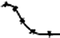
| 25–50 (0) | Conglomerate | Soft | High | Low | Medium | Better on the plain; poorer on the crest | 
| |
Sandy black soil | <10 | Conglomerate, Clay stone | Soft | Medium | High | High | No change; poorer after heavy rain | 
| ||
Black soil mixing gravel | ~50 | Clay stone, Quartz gravel | Medium (rocks) | Medium | High | Medium | Poorer | 
| ||
Black soil mixing rock | ~50 | Conglomerate | Medium (rocks) | High | Medium | Low (rock) | No change | |||
Red soil | Red soil | ~10 | Silt stone | Hard | High | Low | Medium | Poorer | ||
Poor red soil | 0 | Clay stone | Hard | Low | Medium | Low | No change | |||
Sandy red soil | 0(<10) | Silt tone | Hard | Low | Medium | High | Poorer rapid | |||
Red soil mixing rock | ~25 | Silt stone, conglomerate | Medium (rock) | Medium | Medium | Low (rock) | Poorer – rapid | 
| ||
Yellow soil | Sandy yellow soil | 0(<10) | Alluvium | Soft | Medium | High | High | Poorer – rapid | ||
Poor yellow soil | 0(<10) | Quartz gravel | Medium | Medium | High | Low | Poorer | |||
Yellow soil mixing gravel | >50 | Quartz gravel | Hard | Low | High | Medium | Poorer – rapid | 
|
2.4.3 Differences Between Ethnic Groups and Depth of Knowledge
Clear differences between the ethnic groups and their depth of soil knowledge did not appear during the classification exercise, in the description of soil properties or in ranking the results, but did so when obtaining additional information during the narrative parts of the group discussions. This information was difficult to document because knowledge gained by experience is often tacit knowledge which cannot be described explicitly (Hoffmann 2010). In terms of the main difference between the Thai and Hmong ethnicities in north-west Vietnam, Hagel (2011) found a tendency for the Hmong to focus on plant growth and development, as they gave additional information and details mainly about soils’ impacts on plant growth, such as problems found when cultivating maize on certain soils. On the other hand, Thai farmers tended to describe the economic aspects of agriculture, such as the different amount of fertilizers needed to generate higher yields. The information given by the Hmong, such as about soil erosion and soil changes, seemed rather superficial, whereas the Thai farmers presented detailed descriptions and explanations e.g., about topsoil, flows or the mineralization of organic material. Contrary to this general experience, we received detailed soil information in the Hmong village of On Oc during a workshop facilitated by a local extension worker named Mr. Dung, when the language barrier and participants’ shyness levels seemed to be overcome. In On Oc, villagers mentioned the necessity for site specific fertilization on wet and dry Black Soils, plus the effects of different fallow duration periods on different soils.
Even though there were hints at a deeper level of knowledge among Thai farmers, the impression might be superimposed by the fact that Thai farmers appear more self-confident and talkative than the Hmong, partly due to the lack of a language barrier (as communication between the facilitator and the participants in Vietnamese was only possible in the Thai villages), but also due to differences in culture and the location of the villages. Hmong villages in Yen Chau district are mostly quite remote, which has tended to have a negative impact on education plus the capacity of farmers to deal and articulate themselves with foreign researchers (Hagel 2011). The interdependence between surveyors and farmers was experienced in different interview situations, and the quality and depth of information obtained also depended on the clarity and depth of the explanations given by the interviewers, as well as their communication skills and knowledge of the environmental and socio-economic conditions of the indigenous people in a given location.
2.4.4 Comparison Between Farmers’ Soil Quality Assessments and Scientific Soil Fertility Assessments
In Vietnam, local soil knowledge was investigated by Hagel (2011) in 5 out of the 6 study villages, with soil profile descriptions and soil analyses made available (Maier 2010; Koch 2010; Sang 2011) for comparing soil quality, soil fertility and soil suitability assessments. In a sixth village in Chieng Khoi, a local soil map was also drawn and examples of good, poor and moderate soil qualities (Good Black Soil, Poor Sandy Soil and Yellow Soil) shown to the assembled group. Soil quality was assessed by farmers in 10 out of the 15 cases as being low (Table 2.7). Their quality assessment correlated poorly with stocks of total nitrogen (Nt) and did not correlate with available bases (S-value). Only Poor Red Soil in Kho Vang and Poor Sandy Soil in Chieng Khoi were also ranked as poor in respect of Nt, but not in respect of the S-values, but also soils with high Nt-stocks were evaluated as being poor. At the local level, in Chieng Khoi the Good Black Soil and Poor Sandy Soil categories marked the upper and lower limits of soil quality from the farmers’ perspectives, and coincided with nutrient stocks and other fertility parameters (Fig. 2.19).
Table 2.7
Selected local soil types with farmers’ soil quality assessments in six villages of Yen Chau district, north-west Vietnam, with corresponding total Nitrogen (Nt) stocks and available bases (S-value), plus land suitability classes considering and not considering slopes
Village/site | Local soil knowledge | Scientific soil knowledge | Sustainability classa
| ||||||
|---|---|---|---|---|---|---|---|---|---|
Local soil type | Quality evalu.b
| WRB soil type | Stocks Nt kg m−2
| Evalu.b
| S-Value molc m−2
| Evalu.c
| + slope | − slope | |
Khau Khoang
| |||||||||
T3 | Yellow soil | l | Alisol | 1.1 | h | 73 | mh | N | S2 |
Ban Dan
| |||||||||
M1 | Light red soil | l | Luvisol | 1.1 | h | 264 | vh | N | S2 |
P2 | Red yellow soil | m | Alisol | 1.5 | h | 284 | vh | S3 | S1 |
Keo Bo C
| |||||||||
A4 | Stony yellow-black | l | Luvisol | 1.2 | h | 213 | vh | N | S2 |
S1 | Stony yellow black | l | Luvisol | 0.5 | mh | 202 | vh | N | S3 |
Cho Long
| |||||||||
B86 | Yellow soil | l | Alisol | 1.7 | h | 94 | mh | S3 | S2 |
B79 | Yellow soil | l | Luvisol | 1.0 | mh | 108 | h | S3 | S2 |
Kho Vang
| |||||||||
H3 | Red soil | l | Alisol | 0.24 | l | 296 | vh | N | S3 |
Y3 | Red soil | l | Luvisol | 0.26 | m | 215 | vh | N | S3 |
Chieng Khoi
| |||||||||
Site 4d
| Good black soil 1 | h | Luvisol | 0.87 | mh | 193 | h | N | S2 |
Site 4d
| Good black soil 2 | h | Luvisol | 0.61 | mh | 138 | h | N | S2 |
Yellow soil 1 | m | Alisol | 0.51 | mh | 18 | m | N | N | |
Yellow soil 2 | m | Alisol | 0.81 | mh | 60 | mh | S2 | S2 | |
Catena 2d
| Poor red sandy soil 1 | l | Alisol | 0.21 | l | 9 | l | N | N |
Catena 2d
| Poor red sandy soil 2 | l | Alisol | 0.38 | m | 16 | m | N | N |
In a second trial, the suitability of soils for growing maize was evaluated according to the FAO/ITC-Ghent method (Sys et al. 1993). This more comprehensive semi-quantitative approach to land evaluation considers soil chemical properties such as CEC, as well as base saturation, organic matter content and soil physical properties such as drainage, soil depth, texture and slope. The results (Table 2.7) showed that most sites were assessed as unsuitable due to the high slope inclination. Excluding slope inclination, most sites would be considered moderately suitable (S2), and only one (a Red Yellow Soil in Bad Dan) as very suitable in accordance with the nutrient stocks.
Nevertheless, the suitability assessments according to the FAO/ITC method correlated more with the nutrient stocks than with farmers’ assessments, as physical properties were not a limiting factor. One reason for this might be that single soil profiles were not representative of local soil unit areas. The variation found in Nt stocks for seven soil profiles in an area representing a specific local soil type in Ban Huon village, north-west Vietnam, serves as an example of the heterogeneity of soil properties found in a local soil unit, with an average of 1.12 ± 0.82 kg N m−2 found in the range 0.26–1.71 kg N m−2.
In Vietnam, a local soil map for Chieng Khoi commune was compiled with experienced farmers from three hamlets during a workshop covering three sessions. In order to systematically investigate soil variability, 16 representative sites were chosen covering different slope positions, parent materials and local soil types along two catenae (1 and 2) and at two additional sites (sites 3 and 4). Based on local farmers’ knowledge, 12 soil types were identified using a combination of color (black, red and yellow), textural criteria (sand, gravel and stone content) and an assessment of soil properties, the erosion hazard level and soil quality with respect to yield (‘poor’ and ‘good’). The dominant local soil type was identified as a Black Soils (covering 63 % of the total catchment area) followed by Red Soils (28 %) and Yellow Soils (9 %). The distribution of soil types was linked to the relief. Poor Red Soils dominated at the hill top positions and Sandy Black Soils or Sandy Red Soils were exclusively found at the bottom of the slopes. Soil quality was understood in terms of yield produced (‘poor’ and ‘good’) and ranked generally in respect of fertilizer use (for maize), with decreasing amounts used for Black, Red and Yellow Soils.
Comparing farmers’ soil quality and soil fertility assessments with the scientific data (see Fig. 2.10) often showed a match. At the bottom of the slopes, where soils consist of sandy sediments; however, soil quality and infiltration was overestimated by farmers and erosion on slopes was understated. In the case of Poor Red Soils (catena 2 – upper part of the hill), farmers’ estimations based on their experience were confirmed by soil analysis. The case of Black Soils estimated as good (fertile) could be explained by the fact that high soil organic matter was associated with a dark topsoil color by the farmers. The close correlation between soil organic matter content (kg m−2) and the sum of total nitrogen, S-value and available phosphorus in Chieng Khoi (r2 = 0.969), proved the high level of interrelationship between soil organic matter, associated soil color and soil fertility, even if the calculated regression line is only valid locally.
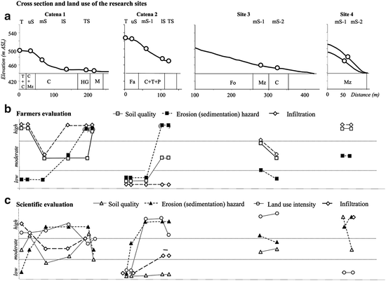
Fig. 2.10
Summary results for soil profiles in Chieng Khoi, north-west Vietnam, with (a) cross section of catenas 1 and 2, and sites 3 and 4, with recent land use and slope position: C cassava, Mz maize, Ma mango, Fa fallow, Fo forest, P pines, T teak, HG Home garden, T top, uS upper slope, mS middle slope, lS lower slope, bS basal slope, (b) the results based on local knowledge, and (c) the results of a scientific investigation into soil quality, erosion and sedimentation hazards, plus infiltration
At the Bor Krai research site, Pang Ma Pha district, Mae Hong Son province in north-west Thailand, both a local soil map and a scientific soil map were created (Fig. 2.11b, c). The higher western parts of the area consist of Permian limestone (60 % of the area), while the eastern part consists of claystone (39 % of the area). The scientific soil map was based on 22 described and analyzed soil profiles, plus 341 auger sampling. The WRB classification of soil types found Alisols, Acrisols and Cambisols, covering 69 %, 21 % and 9 % of the mapped area respectively.
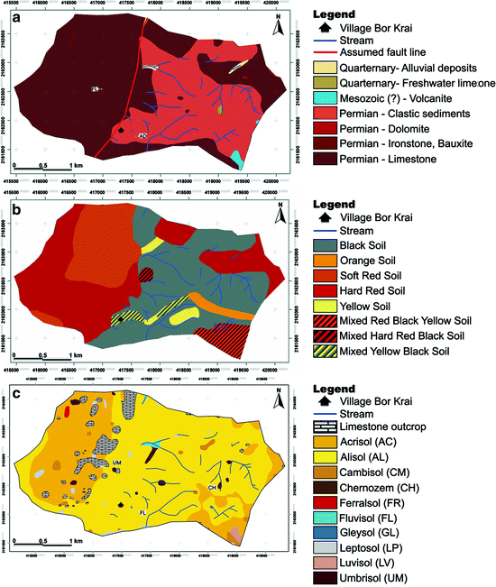
Fig. 2.11
(a) Petrographic map of the Bor Krai research area in north-west Thailand, (b) the local soil map, and (c) a soil map according to the WRB classification, all at the soil group level
Farmers distinguished four main soil types, namely Black, Red, Orange, and Yellow soils. After further interviews and updates a final soil map was compiled using the most important soil classes of Black, Hard Red and Soft Red soils, covering 38 %, 34 % and 18 % of the area respectively. The remaining parts were said to be covered by Orange, Yellow and Mixed soils. The soil quality of the Black Soils was assessed to be the highest, followed by the Hard Red and Soft Red Soils; the Orange Soils and the Yellow Soils. Black Soils were characterized as having high infiltration rates and a high erosion hazard level, and Hard Red Soils as having low infiltration rates and a medium resistance to erosion. Soft Red Soils were assigned a low bulk density, a high infiltration rate and a negligible erosion hazard level, while Orange and Yellow Soils differed solely in terms of color; both were given low infiltration rates and high levels of erodibility.
High stocks of Nt and S-values were assigned to the Black Soils, and low Nt and moderate S-value stocks to the Yellow Soils. All other soil types were identified as having medium-high Nt stocks. Differences in the S-values, in combination with the mentioned physical soil properties of the remaining local soil types, made farmers’ differentiations reasonable.
The local soil map and WRB-based soil map appeared to be totally different, while the local soil map to a large extent corresponded with the petrographic map (Fig. 2.11a). The WRB map was more or less independent from the parent material and the major soil types; the major soil types Alisols and Cambisols occurred irrespective of the parent material and only Acrisols occurred in combination with a specific parent material, Limestone, at altitudes above 800 m.a.s.l. While the S-value of the major WRB soil types differed markedly (Table 2.8), a fact which is implicite the soil type definition, nitrogen stocks were similar and varied a lot within each soil type. This means that as long as available bases are not a limiting factor, WRB soil classifications are not suitable for the carrying out of soil quality assessment in this research area.
Table 2.8
Local soil types using farmers’ soil quality assessments in the Bor Krai research area, north-west Thailand, with corresponding stocks of total Nitrogen (Nt) and available bases (S-value) based on farmers’ evaluations
Local soil classes WRB-soil types
| Quality evaluation | Stocks Nt kg m−2
| Evaluationa
| S-value mol m−2
| Evaluationb
|
|---|---|---|---|---|---|
Black soil | h | 1.21 | h | 136 | h |
STD/n | 0.275/9 | 33/9 | |||
Hard red soil | h | 1.00 | mh-h | 49 | m |
STD/n | 0.258/6 | 11/6 | |||
Soft red soil | mh | 0.95 | mh | 89 | mh |
STD/n | 0.034/2 | 28/2 | |||
Mixed hard red-black soil | m | 0.85 | mh | 258 | vh |
STD/n | 0.023/2 | 84/2 | |||
Mixed yellow-black soil | m | 0.85 | mh | 66 | mh |
STD/n | 0.174/3 | 12/3 | |||
Yellow and orange soil | l | 0.5 | l | 30 | m |
STD/n | 0.084/3 | 10/3 | |||
Acrisols
| 1.09 | h | 50 | m | |
STD/n | 0.314/3 | 8/3 | |||
Alisols
| 1.00 | mh-h | 88 | mh | |
STD/n | 0.243/8 | 40/8 | |||
Luvisol
| 1.13 | h | 193 | h | |
STD/n | 0.378/2 | 7/2 |
A poor correlation between WRB-based soil maps and local soil maps has also been reported by others, notably Payton et al. (2003) and Ali (2003). The main reasons are seen to be differences in the conceptual bases of the soil-classification systems used (Niemeijer and Mazzucato 2003). The WRB classification system considers essential chemical soil parameters (e.g., CEC and base saturation) and/or properties below the soil surface (e.g., mottles), while local soil types are based on visible soil color and soil structure, and on tacit knowledge, which is based on extensive management experience and a holistic perception of a given site.
2.4.5 Cost Aspects of Different Soil Mapping Approaches
Collecting local soil knowledge in north-west Thailand and Vietnam helped to provide an overview of the main soils in these areas and proved helpful in the appraisal of soil diversity. It can be concluded that local knowledge is a valuable tool, if one wants to reduce the number of investigation points, as it helps save time and effort. Based on the calculated costs of the three soil mapping approaches outlined here (see Table 2.9), the conventional soil mapping approach used in the Yen Chau research area (17 km2) would cost 34,000 Euros (without laboratory analyses), while the catenary approach would reduce this cost by two-thirds. Reducing the number of necessary profiles by 50 % using local knowledge would reduce the total cost to 5,600 Euros. From a financial point of view, the use of local knowledge is therefore a necessity when only poor spatial information regarding natural resources is available.
Table 2.9
Calculated costs of the two soil mapping approaches and for eliciting local knowledge – based on local salaries
Soil mapping by augeringa (excluding lab-analysis) | Soil survey using a transect mapping approachb (including lab-analysis)c
| Local knowledged
| |
|---|---|---|---|
Scale | <= sub-watershed (1:10,000) | <= sub-watershed (1:10,000) | sub-watershed commune area |
Required sampling points per sq. km | 400 | 5–(8) | 0 |
Costs in Eurose
| 2,000 | 650 (125/pit) | 350 |
2.4.6 Usefulness and Limitation of Local Soil Knowledge
Our studies confirmed the usefulness of PRA tools in identifying local soil knowledge, comprising soil types, their properties and suitability, and soil maps. Based on long-term observations and experience, which are difficult to acquire using scientific methods, local soil knowledge enables one to identify ‘hotspots’ in terms of vulnerability and susceptibility for using site specific and site adapted measures. Local soil knowledge relies on a certain, spatially limited realm of experience, especially during soil suitability assessments, because they are based on a holistic approach and long-term observations, which provide helpful hints for further assessments based on scientific analysis. However, local soil knowledge is applicable for extrapolating only on a conditional basis. Local soil units span a larger area and do not comprise spatial variations, but this fact should not necessarily be considered a disadvantage, because the traditionally scientific soil mapping approaches also have disadvantages because the collected information is, strictly speaking, point data. The integration of both approaches in our view, means the production of suitable and from a user perspective, acceptable, soil maps for land-use planning purposes. Taking local soil knowledge into consideration also helps to prevent inappropriate decisions being made in terms of land-use planning, such as the promotion of rubber in Son La as described above. Due to its holistic characteristics, local soil knowledge includes natural as well as socio-economic contexts, and; hence, can help to remedy the shortcomings described by Minh (2010) and, as a consequence, help to establish socially accepted agricultural production systems.
2.5 Development of Soils on Limestone in Tropical Southeast Asia
Limestones are generally rather scarce in tropical areas, and this is especially true for the savannah areas of South America and Africa. Though in Southeast Asia limestone areas occur rather frequently, covering about 10 % of the region, or around 215,000 km2 (Mouret 2004).6 The main reason for this is the fact that Southeast Asia did not belong to the old Gondwana Southern Continent and so contains a series of Paleozoic and Mesozoic rocks which have been tectonically translocated. The limestone areas in Southeast Asia are predominantly characterized by unique landforms consisting of karst towers (Gunn 2004) – a reason, why soil development is comparably young. In general, soil development started in the Paleogene period or later; nevertheless, limestone dissolution in the semi-humid tropic areas seems to have been rather quick and; therefore, in the karstic depressions, one can find layers several meters thick derived from the residue of limestone. Due to their common steep and rugged slopes, these areas are often found in the highlands, where there is also poor infrastructure. As a result, they tend to be inhabited by socially disadvantaged groups, and especially by ethnic minorities. In these areas, fallow-based farming systems that use little mineral fertilizer and that work alongside subsistence-oriented animal husbandry systems prevail. However, a recent change from long-term to shorter fallow periods or permanent cropping-based farming systems has involved the increasing application of agrochemicals, which is problematic because limestone areas are generally karstified and characterized by high subsurface discharge. Tests with tracers in Son La province revealed translocation velocities between 95 and 235 m/h in karstic underground areas (Nguyet 2006). A behavior, which may affect downstream the functionality of ecosystems and the quality of drinking water. In addition, the continuous clearing of forests and cropping on sloping land has led to tremendous soil losses occurring, those which will not be reconstituted for thousands of years based on natural soil formation processes. Limestone soils represent environmental barriers to xenobiotica between the surface and the karstic underground areas; therefore, provide important ecosystem services. Due to the fact that soils in the karstic areas of Southeast Asia are not well-understood nor analyzed (Vijarnsorn and Eswaran 2002; Kubiniok 1999), this paper aims to present basic information on limestone soils in the region, to highlight soil formation processes in such areas and the resulting characteristics and constraints that arise. Examples from Thailand, Laos and Vietnam will be presented.
There are two main initial hypotheses used, when working with sub-humid tropical soils on limestones. The first is that the soils will be derived in the main from limestone residues, and with addition of aeolian material not expected or of minor importance when compared with limestones in subtropical areas (Jahn 1997). The second hypothesis is, that it will be expected for the soil development process to show tropical soil formation characteristics, such as with ferralitic soils, but only when the land surface is sufficiently old.
The following questions will be addressed here: (1) What factors influence soil formation in the study area, (2) what processes prevail in sub-humid Southeast Asia, and (3) how are these related to those in other tropical and subtropical zones? Finally, it should be checked as to how vulnerable these soils are to chemical and physical soil degradation.
2.5.1 Materials and Methods
Materials: Three karst catchments, each a few km2 in size, were selected in northern Thailand, Laos and northern Vietnam, with the ages of the limestone ranging from Carboniferous in Laos to Permian in northern Thailand and finally Triassic in northern Vietnam (Table 2.10). All these limestone areas underwent orogeny with tectonic movements during the Cretaceous to Paleogene periods, and frequent earthquakes to this day indicate still ongoing tectonic activity. Therefore, the landscapes, or rather the land surfaces, are relatively young, and the semi-humid tropical climate together with these tectonic uplifts have led to intensive karstification, with the presence of prominent limestone towers, and karst depressions in-between.
Table 2.10
General information about the three research areas in Southeast Asia
Research area | Bor Krai | Huay Sang | Muong Lum |
|---|---|---|---|
Country | Thailand | Laos PDR | Vietnam |
Province | Mae Hong Son | Bokeo | Son La |
District | Pang Ma Pha | Pha Udom | Yen Chau |
Elevation [m.a.s.l.] | 550–1,020 | 415–575 | 700–1,300 |
Mean annual temperature [°C a-1] | 19.8a
| 25.6b
| 19.7c
|
Mean annual precipitation [mm a−1] | 1,197a
| 1,153b
| 1,427c
|
Age of limestone | Permian | Carboniferous-Permian | Triassic |
Ethnic group | Black Lahu | Hmong, Khamu | Black Tai, Hmong |
Farming system | Subsistence | Subsistence | Subsistence, commercial |
Main crops | Upland rice, maize | Paddy rice, maize | Paddy rice, maize, cassava |
These depressions often do not have a surface outlet. Soil cover ranges from almost bare rock at the top of the limestone towers and their sometimes vertical slopes, to more than 10 m thick within infillings in the closed karstic depressions. The climate of the research area belongs to the Koeppen climatic zone Aw, with transitions to Caw. The lowland tropical climate in Laos belongs to the Aw climate type, whereas the uplands of Thailand and Vietnam tend to have a cool dry season, during which time the temperature can fall below 18 °C, and so represent mesothermic Caw climates. Rainfall during the 5–6 month long wet season is between 1,100 and 1,500 mm in all the study areas (see also Chap. 3). The areas are predominantly inhabited by ethnic minorities, or so-called ‘hill tribes’, some of which settled in the areas only one or two generations ago. All the study areas are dominated by subsistence farming, but the increasing intensification of land use is taking place (see Chap. 1), which has led to a tremendous increase in soil erosion, especially under the cultivation of upland rice and maize (see Sect. 2.2.6).
Methods: The soils were described according to the FAO guidelines (FAO 2006) and classified according to the WRB (WRB 2006). All physical and chemical analyses were carried out according to standard procedures (Blume et al. 2000; Blume et al. 2011; Herrmann 2005).
The bulk mineralogy was analyzed using X-ray diffraction of powder specimens, using a Siemens D500, while the clay mineralogy was analyzed after separating the clay fraction using oriented samples on glass trays. The clay samples were pretreated with magnesium chloride, glycerol and potassium chloride until saturation, then all the specimens were measured after air drying under ambient conditions. Potassium specimens were additionally heated to 50 °C, 400 °C and 600 °C. For quantification of the bulk mineral composition, Rietveld software (Autoquan, Seiffert) was used, and for quantification of the clay fraction, the software package Diffrac AT 3.3 (Siemens) was utilized. X-ray fluorescence (XRF) was performed for total element analysis using a Siemens SRS 200 instrument. Four quantification standards were used. Scanning electron-microscopy (SEM) was carried out with a Leo 420 instrument. This analysis was performed on sand-sized natural minerals or aggregates which had been spattered with gold. These samples were also analyzed with energy dispersive X-ray spectrometry (EDX) (Blume et al. 2011).
2.5.2 Limestone and Limestone Residue Mineral Composition
Paleozoic and Mesozoic limestones in the study areas were found to be very rich in carbonates (98 % and over), and in all cases calcite was dominant, associated with some dolomite in Laos (7 %) and Vietnam (up to 15 %). In the bulk samples only a few non-carbonatic minerals were detected; the majority represented by mica of up to 2 %, or quartz of up to 1 % (Table 2.11).
Table 2.11
Quantitative mineralogical composition (%) of limestone and its residues in Thailand, Laos and Vietnam, according to XRD and Rietveld analyses (see Table 2.10)
Albite | Anorthite | Calcite | Dolomite | Goethite | Hematite | Illite | Kaolinite | Muscovite | Quartz | Orthoclase | Vermiculite | |
|---|---|---|---|---|---|---|---|---|---|---|---|---|
Bor Krai (LS) | 99 | 1 | ||||||||||
Bor Krai (LR) | 5 | 9 | 2 | 67 | 8 | 24 | 25 | |||||
Huay Sang 1779 (LS) | 92 | 7 | 1 | |||||||||
Huay Sang 1779 (LR) | 3 | 7 | 14 | 31 | 45 | |||||||
Huay Sang 1807 (LS) | 98 | 2 | ||||||||||
Huay Sang 1807 (LR) | 7 | 9 | 8 | 36 | 35 | 6 | ||||||
Muong Lum (LS) | 83 | 15 | 2 | |||||||||
Muong Lum (LR) | 5 | 3 | 10 | 46 | 11 | 28 | 3 |
Analyzing the limestone residues gave a much more differentiated picture. In all samples, primary minerals were detected (Table 2.11); however, the feldspar content was always low, with 3–5 % albite and a maximum of 7 % anorthite. This signifies the presence of some unweathered material input from the continent. This finding was underlined by the rather significant presence of mica minerals in the residue, ranging from 18 % in Vietnam up to more than 50 % in the older limestones of Laos and Thailand. However, it is well-known that illitization takes place when other 2:1 clay minerals or even kaolinite enter a marine environment. Quartz was also found, which can be either derived from primary rocks or a residue of strongly weathered material. Furthermore, iron oxides were found; goethite without being significant, but hematite signifying a terrestrial environment. The latter was found in Thailand and in minor amounts in Vietnam also. A significant mineral found in the limestone residue was kaolinite, which is thought to be unstable under a marine environment. Based on this assumption, kaolinite in limestone residue has to have been imported from a terrestrial environment, with carbonate precipitation rates being high in order to impede kaolinite transformation. In particular, the observed 46 % kaolinite in the limestone from Muong Lum is a clear indication of intense chemical weathering in the terrestrial source region during formation. Also, the limestones from Laos and Thailand showed minor components of kaolinite, indicating that limestone formation was “peri-continental”. The variable mineral composition of the limestone residue induced problems in terms of understanding and, in particular quantifying the soil forming processes at work, because conclusions should be based on very clear initial conditions.
2.5.3 Soil Associations or Soil Distribution in the Karstic Areas of Southeast Asia
In the three research areas, Bor Krai in Thailand, Huay Sang in Laos and Muong Lum in Vietnam, quite a variety of soils was found. In total, 14 of the 32 reference groups from the World Reference Base of Soil Resources were observed, and as in other areas when using a quantitative approach, only a few reference soil groups were shown to dominate, these being Alisols and Acrisols, besides Cambisols, Leptosols and Luvisols. However, the associated soil reference groups may be used to characterize and especially differentiate the landscapes from each other.
Bor Krai in Thailand represents a typical karst area with all the associated phenomena such as caves and dolines (Fig. 2.12). Leptosols were found there on very steep slopes and on convex elevated landscape positions. Nudilithic Leptosols appeared with no real A-horizon, but with a cover of lichens and a little bit of soil material. Leptosols can develop from other limestone soils via erosion and then have a clay-loam texture and a sub-angular blocky structure. By far the dominant soils were found to be of a clay illuviation type, soils that showed a strong clay increase with depth, from a clay loam or silt loam in the topsoil to a high clay content and clayey texture with angular blocky structures at a depth of 1–1.5 m. Alisols were mostly found at the lower altitudes (equals higher temperature and lower rainfall), and in Thailand were found to have a red soil color, indicating that rubefication had taken place during their formation, which is also true for the Acrisols, which were widespread in altitudes above 800 m.a.s.l. In both RSGs, the A-horizon directly overlaid the argic horizon, though a prominent E-horizon was generally missing. Acrisols may grade into Ferralsols; however, especially in Bor Krai, this may have been related to a lithological change, because Ferralsols were only found where iron ore intruded the limestone (Herrmann et al. 2007). The texture of the Ferralsol was silty-clay to clay and the structure was characteristically a granular to sub-angular blocky structure which is very strong. Also, there was an increase in the amount of clay found with depth.
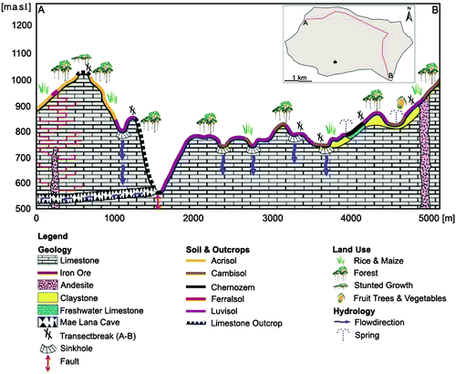
Fig. 2.12
Rock, soil and land use types in the Bor Krai karst area of Thailand
Those soils with the highest organic matter content and abundant biotic structures were found around karst springs, associated with the occurrence of freshwater limestone. These soils could be classified as Calcic to Luvic Chernozems, and had a very dark and more than 50 cm thick topsoil. The occurrence of secondary lime in the topsoil was characteristic, though karstic infillings in the depressions often contained Umbrisols. Charcoal and brick stone remnants pointed towards human influence and long-term slash and burn cultivation activities. Floodplain soils (Fluvisols) and groundwater affected soils (Gleysols) are extremely rare in this environment, since surface streams and surface groundwater are rare in karst areas; however, where they occur, they represent very fertile soils and are frequently used for legumes and other garden crops which demand irrigation. Overall, the Bor Krai area was composed of 66 % Alisols, 20 % Acrisols, 8 % Cambisols and 1 % Leptosols, while Umbrisols, Ferralsols, Chernozems, Fluvisols and Gleysols together representing less than 1 %.
In Huay Sang in Laos, the majority of the area was found to be covered by claystone, with only prominent limestone outcrops covered mainly by Acrisols, Luvisols and Cambisols. In contrast to Bor Krai, depressions here were covered with Anthrosols, which may be equivalent to Umbrisols in the other study area. Here we also found more acidified Acrisols along the slopes (Fig. 2.13).
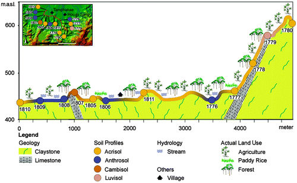
Fig. 2.13
Geology, soils and land use at Huay Sang in Laos
As for the other areas, the landscape around Muong Lum in Vietnam was dominated by soils which revealed clay illuviation (Fig. 2.14); however, here Luvisols dominated, accompanied by Alisols – occurring in karst pockets several meters deep between Rendzic and Lithic Leptosols. We did not detect rubeficated soils in this area, a sign that the soils are younger and less developed. The presence of less developed soils can signify the presence of pronounced erosion activities, but in this area, in spite of erosion being present (as observed in all three areas), this was found not to be the case. A special feature of the soils found on limestone is that due to their dynamic, weathering contacts with the lithic surface, the more weathered horizons/minerals occur directly above the bottom layer of the soil, so a transitional BC or Cw horizon is not normally observed. This means that under erosion activity, the most developed horizons can still be detected until all of the soil has been eroded; up to that point a deep soil horizon can be observed. In this area, Leptosols with Nudilithic, and Rendzic qualifiers, were more widespread; furthermore, on higher slopes, even those without freshwater lime present, Phaeozems were detected, and in depressions, Anthrosols were found like in Laos. When considering the three catchments in Thailand, Acrisols and Alisols dominated; whereas in Laos, Luvisols, together with Acrisols, covered the karstic areas. In Vietnam, the Alisols seemed to be the most dominant soils (Table 2.12).
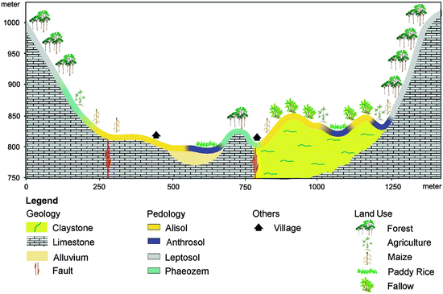
Fig. 2.14
Geology, soils and land use in the Muong Lum catchment in Vietnam
Table 2.12
Proportion (%) of WRB Reference Soil Groups present in the limestone areas of Thailand, Laos and Vietnam
AC | AN | AL | CB | CH | FL | FR | GL | LP | LV | PH | RG | ST | UM | ||
|---|---|---|---|---|---|---|---|---|---|---|---|---|---|---|---|
Bor Krai | limestone | 34.5 | 0.0 | 50.0 | 4.5 | 0.0 | 0.0 | 1.8 | 0.0 | 5.9 | 0.0 | 0.0 | 0.0 | 0.0 | 2.4 |
freshwater limestone | 0.0 | 0.0 | 0.0 | 0.0 | 81.8 | 0.0 | 0.0 | 0.0 | 18.2 | 0.0 | 0.0 | 0.0 | 0.0 | 0.0 | |
claystone | 0.8 | 0.0 | 87.4 | 2.3 | 0.8 | 0.8 | 0.0 | 0.8 | 0.8 | 2.3 | 0.0 | 0.0 | 1.1 | 2.8 | |
Huai Sang | limestone | 33.3 | 0.0 | 0.0 | 33.3 | 0.0 | 0.0 | 0.0 | 0.0 | 0.0 | 33.3 | 0.0 | 0.0 | 0.0 | 0.0 |
claystone | 55.6 | 44.4 | 0.0 | 0.0 | 0.0 | 0.0 | 0.0 | 0.0 | 0.0 | 0.0 | 0.0 | 0.0 | 0.0 | 0.0 | |
Muong Lum | limestone | 0.0 | 0.0 | 28.6 | 0.0 | 0.0 | 0.0 | 0.0 | 0.0 | 40.0 | 1.8 | 52.0 | 1.2 | 0.0 | 0.0 |
shale | 0.0 | 0.0 | 59.7 | 0.0 | 0.0 | 0.0 | 0.0 | 0.0 | 0.3 | 0.0 | 0.0 | 0.0 | 40.0 | 0.0 |
2.5.4 Soil Properties and Soil Forming Processes in Southeast Asian Karst Areas
Texturally undifferentiated soils like Cambisols and Umbrisols were found to represent only a minor share, and most soils showed a clear tendency towards clay illuviation, a fact reinforced during field observations. Most soil profiles and augering showed a textural differentiation and an abundance of clay skins at the ped surfaces in the subsoil. Furthermore, all soils analysed showed an increase in clay from the topsoil to the subsoil layers – amounting to 15–20 wt.% of the fine earth. There is a tendency for Luvisols and Alisols to have a less distinct textural difference than more developed soils such as the Acrisols, as the latter may contain more than 80 wt.% of clay in the argic horizon. Umbrisols and Cambisols did not show this increase and only reached clay content levels of about 50 wt.% in the subsoil. In this respect, one issue to be discussed is the possible layering of the parent material. As frequently observed in temperate or mediterranean zones, widespread evidence was found for higher silt and sand shares in the topsoils; however, in the analysed areas there was no sign – neither from the textural nor the mineralogical data – of real stratification. The texture transition was found to be gradual and the mineralogical composition of the coarser grain size fractions was similar. Therefore, it can be concluded that the major textural differentiation was caused by clay illuviation.
In the Bor Krai area, the clay mineral spectrum was found to be variable, with illite dominating, a larger share of mixed layer illite-vermiculite, some vermiculite, plus a large share of kaolinite, quartz and the oxides of hematite and goethite. Already in the younger stages of soil development (Luvisol and Alisol), the feldspars had already disappeared, meaning that hydrolytic weathering was very pronounced. The share of 2:1 clay minerals had been reduced or transformed into mixed layer clay minerals, and in Acrisols, the share of kaolinite was becoming important – the start of Si-export (desilification).
The above findings represent a continuation of the weathering tendency, with Illite and mixed layers reduced, vermiculite still present and kaolinite reaching its maximum, plus with hematite increasing and quartz already diminished. As a prominent new formation in the bulk soil and clay minerals, Gibbsite was found. Coming to the Ferralsol, this tendency was found to be continuing, though from three or four mineral layers, only Chlorite could be found, quartz had almost disappeared and almost all the iron was bound in hematite. Kaolinite had also reduced and Gibbsite was found to be the dominant mineral (Table 2.13).
Table 2.13
Texture and semi-quantitative mineralogical composition of topsoil and subsoil horizons in the limestone area of Bor Krai in Thailanda
Soil | Alisol 1759 | Acrisol 1780 | Ferralsol 1551 | |||||||
|---|---|---|---|---|---|---|---|---|---|---|
Slope (%) | 17 | 35 | 344 | |||||||
Horizon | Ah | Bt3 | Ah1 | Bt2 | Bo4 | |||||
Depth (cm) | 0–17 | 56–76 | 0–20 | 62–86 | 150–160 | |||||
Skeleton (%) | 2–5 | 0–2 | 0 | 0 | 0 | |||||
Sand (%) | 15 | 13 | 8 | 7 | 3 | |||||
Silt (%) | 44 | 26 | 44 | 13 | 16 | |||||
Clay (%) | 41 | 61 | 48 | 79 | 82 | |||||
Mineralogy | Bulk | Clay | Bulk | Clay | Bulk | Clay | Bulk | Clay | Bulk | Clay |
(%) | ||||||||||
Gibbsite | 0 | 0 | 0 | 0 | 36 | 18 | 37 | 20 | 58 | 45 |
Kaolinite | 21 | 24 | 18 | 24 | 31 | 50 | 36 | 52 | 14 | 22 |
Illite | 13 | 36 | 17 | 38 | 0 | 6 | 0 | 5 | 0 | 0 |
Intergrade 10–14 Å | 0 | 26 | 0 | 22 | 0 | 0 | 0 | 0 | 0 | 0 |
Vermiculite | 0 | 5 | 0 | 6 | 3 | 11 | 3 | 10 | 0 | 0 |
Chlorite | 0 | 0 | 0 | 0 | 0 | 0 | 0 | 0 | 10 | 11 |
Quartz | 52 | 0 | 48 | 0 | 11 | 0 | 6 | 0 | 4 | 0 |
Goethite | 6 | 4 | 9 | 5 | 0 | 0 | 0 | 0 | 0 | 0 |
Hematite | 8 | 5 | 8 | 5 | 19 | 15 | 18 | 13 | 14 | 22 |
As the pH of most of the local soils in water is around 6 after decalcification, only a mild acidification was found to be taking place in this limestone environment; however, a strong leaching of the bases must have taken place. The tendency towards an initial increase but then decrease in kaolinite and the near disappearance of quartz and three-layer minerals, suggested the presence of a very strong desilification/ferralitisation process. This seems to be on older surface with the most dominant process, culminating in a new formation of Gibbsite.
Gibbsite was found not only in the clay fraction but also in the bulk soil, where the mineral seemed to be clay, because the content in the bulk soil was higher than in the clay fraction (Schuler 2008; Herrmann et al. 2007). The findings of the profile analyzed in Vietnam confirm in principle the results found in Thailand; however, there were two clear exceptions. The first was that in all soils there were found some three-layer minerals, meaning the soils were not so strongly differentiated and desilified.
On the other hand, a high share of kaolinite was found, inherited from the rock. Also, differences were found in the oxides present. Gibbsite was found in all the samples, but sometimes in minor amounts, and hematite was not found (Table 2.14). The profiles from Laos were found to sit between those of Thailand and Vietnam. These lowland profiles all had a dominant share of kaolinite, and also illite, but with gibbsite almost missing. Some of the goethite may have been transformed into hematite already. This represents a not so clear differentiation between the soils in Laos and Vietnam, but is a clear sign that the land surface in Laos is younger. The overall organic matter content was between 1.5 % and 3 % organic carbon, and the C/N-ratio was between 10 and 15, decreasing down in the soils to around 5 on occasion. This reflected an undisturbed but very quick turnover of organic matter. However, the organic matter store at 1 m depth was on average 200 t/ha, with a spread from about 100–300 t. Only in the Chernozems and Umbrisols, which were very rare, was the organic matter content found to be double or more. There are two key reasons for this, one, due to the binding of organic matter to freshly precipitated calcium carbonate, and two, due to the colluviation of eroded soil material together with organic matter at an above average rate. Therefore, these soils seemed to be those with the highest level of fertility.
Table 2.14
Texture and semi-quantitative composition of the topsoil and subsoil horizons in Huay Sang in Laos and Muong Lum in Vietnam
Soil | Luvisol 1982 (Muong Lum) | Alisol 1981 (Muong Lum) | Luvisol 1779 (Huay Sang) | Acrisol 1778 (Huay Sang) | ||||||||||||
|---|---|---|---|---|---|---|---|---|---|---|---|---|---|---|---|---|
Slope (%) | 24 | 21 | 8 | 2 | ||||||||||||
Horizon | −1 Ah | −2 Bt | −1 Ap | −3 Bt1 | Ah | Bt | Ah | Bt | ||||||||
Depth (cm) | 38 | 90 | 0–4 | 40–84 | 0–11 | 38–59 | 0–7 | 60–82 | ||||||||
Skeleton (%) | 0 | 0 | 0 | 0 | 0 | 15 | 0 | 0 | ||||||||
Sand (%) | 8.1 | 9.3 | – | – | 52.5 | 46.9 | 47.0 | 14.1 | ||||||||
Silt (%) | 27.1 | 30.5 | – | – | 25.0 | 20.6 | 27.5 | 40.0 | ||||||||
Clay (%) | 64.8 | 60.2 | 23.5 | 30.0 | 22.5 | 33.7 | 25.5 | 45.9 | ||||||||
Mineralogy | Bulk | Clay | Bulk | Clay | Bulk | Clay | Bulk | Clay | Bulk | Clay | Bulk | Clay | Bulk | Clay | Bulk | Clay |
(%) | ||||||||||||||||
Gibbsite | 0 | 0 | 0 | 0 | 0 | 0 | 0 | 0 | 0 | 0 | 0 | 0 | 0 | 0 | 0 | 0 |
Kaolinite | 25 | 40 | 27 | 48 | 20 | 43 | 26 | 50 | 9 | 38 | 12 | 38 | 8 | 28 | 8 | 38 |
Illite | 0 | 3 | 0 | 3 | 0 | 5 | 0 | 3 | 21 | 22 | 26 | 28 | 20 | 46 | 28 | 44 |
Intergrade | ||||||||||||||||
10–14 Å | 0 | 6 | 0 | 6 | 0 | 11 | 0 | 8 | 0 | 20 | 0 | 12 | 0 | 14 | 0 | 9 |
Vermiculite | 4 | 45 | 6 | 38 | 2 | 32 | 4 | 30 | 0 | 13 | 0 | 16 | 0 | 6 | 0 | 5 |
Chlorite | 0 | 0 | 0 | 0 | 0 | 6 | 0 | 6 | 0 | 0 | 0 | 0 | 0 | 0 | 0 | 0 |
Quartz | 37 | 0 | 39 | 0 | 48 | 0 | 46 | 0 | 61 | 0 | 45 | 0 | 67 | 0 | 56 | 0 |
Goethite | 30 | 6 | 25 | 5 | 28 | 3 | 25 | 3 | 6 | 7 | 13 | 6 | 3 | 6 | 6 | 4 |
Hematite | 2 | 0 | 1 | 0 | 0 | 0 | 0 | 0 | 0 | 0 | 0 | 0 | 0 | 0 | 0 | 0 |
2.5.5 Discussion
A typical chrono-sequence for soil development was established. The development of morphological soil profiles is strongly correlated with the formation of minerals, and when we compared this sequence with the observations made in Laos and Vietnam, the last mineral, Ferralsol, was missing, though the other minerals seemed to occur in the same sequence. An observation was made that with the accumulation of residue clay, potassium might also be used as a tracer (Fig. 2.15); however, at the peak of the development of Luvisols, the destruction of three-layer clay minerals and desilification also leads to a loss of potassium, sometimes even a complete loss by the end. Some more stable elements like Th and U, as well as Zirconium, showed a relative enrichment throughout the sequence. Beside the chrono-sequence, a climatic sequence showed increased leaching with increasing altitude, leading to higher shares of Acrisols in Thailand and Alisols in Vietnam. Overall, it can be concluded that fersialitic and ferralitic processes have dominated the development of soils in the karstic areas of Southeast Asia.
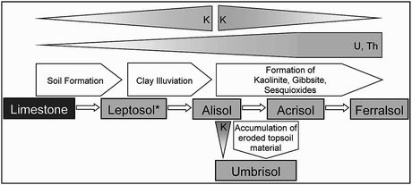
Fig. 2.15
Development of limestone soils in northern Thailand (Schuler 2008)
Taking Acrisol from Table 2.13 as an example to estimate overall soil formation processes, the soil down to 1 m in depth had a total mass of 1,089 kg/m2, and the organic matter content was an average of 2.23 %, leading to a mineral mass of 1,064 kg. The limestone residue was about 1 %; therefore, the mass of the limestone dissolute must have been 106.47 t. If the bulk density of the limestone was 2.75 kg/dm3, that means the thickness of the limestone layer must have been 38.7 m to form 1 m of soil. With an annual precipitation of 1,288 mm and an evapotranspiration of 748 mm, the leaching rate would have to have been 540 l/m2 per year. With a solubility of calcium carbonate of 400 mg/l, there would be a dissolution of calcium carbonate 540 times 400 mg/m2 a year, equalling 216 g/m2 a year. This means that the entire time period required to form this 1 m of soil would have been 492.917 years.
2.6 Soil Erosion Leading to Changes in Soil Fertility7
The cultivated soils on steep land in Southeast Asia’s mountainous areas are highly susceptible to erosion. Soil erosion is considered to be already high under traditional swidden farming systems, but in fact is even higher under most modern current and intensified production systems. Triggered by population pressure and economic development, land use has intensified in recent decades, with an associated reduction of biodiversity, nutrient depletion, reduced soil fertility and soil productivity being some of the consequences (Dung et al.
2008; Pansak et al.
2008; Chaplot et al.
2005; Toan et al.
2004). Based on one of the oldest and most widely used erosion models – the Universal Soil Loss Equation (Wischmeier and Smith 1978) – which describes soil erosion as a product of climate (R factor), soil properties (K factor), relief (LS factor), land use and soil protection (C and P factor), high erosion rates may be expected under modern farming regimes. Our observations confirmed these expectations, but nevertheless also showed that erosion can be prevented.
Here we will describe the situation in northern Vietnam in terms of the impact of land use intensification on soil erosion and soil fertility change. The driving factors for soil erosion and soil fertility change will be elaborated upon, and soil types, the morphologic situation and land use types will be differentiated in terms of their impact on soil erosion and soil degradation, in order to provide ideas for suitable soil conservation measures to be put in place in support of the development of sustainable soil use. In the first part of this section, we describe the disposition towards erosion and assess the quantity of soil loss in the study areas, as well as the impacts of land use intensification. The previously mentioned erosion determining factors will be the main focus in this part, using observations taken from Chieng Khoi and Muong Lum in Yen Chau district, north-western Vietnam (see Chap. 1). In the second part of this section we analyze the effects of erosion on soil fertility, whereby soil fertility is understood as a combination of chemical and physical soil properties. At the five research sites in Yen Chau district, undisturbed soils were investigated within primary forest sites, serving as reference sites for comparison with soils under arable land. In Chieng Khoi, where soil under forest unaffected by erosion and suitable reference sites could not be found, soils different in terms of their relief position, parent materials, duration of cultivation and level of erosion hazard were compared.
2.6.1 Materials and Methods
The climate in Yen Chau district is described in Chap. 3 of this book. The geology of the area is characterized by a rift structure, and two major geological units were distinguished during the study: (1) lower altitude, Upper Cretaceous red colored clastic sediments (sandstone, claystone and siltstone) with inter-bedding of calcareous conglomerate – all members of the Yen Chau Formation, (2) higher altitude Middle-Triassic limestone, (3) Late-Triassic clayey shale (Bao 2004; Nguyen 2005), and to a lesser extent (4) calcareous clastic sediments (marl).
Study sites. Chieng Koi, located at between 410 and 550 m.a.s.l., was chosen to be representative of the geological unit clastic sediments, while Muong Lum, located between 800 and 900 m.a.s.l., was chosen for its limestone and clayey shales. Any investigation carried out into the impact of erosion on soil fertility requires soil profiles to be assessed at both eroded and non-eroded sites. In Yen Chau district, largely undisturbed sites under forest were found on limestone (three sites), clayey shale (two sites) and marl (one site). These reference sites were then compared with cultivated sites over different time spans. In addition to the study sites in Chieng Khoi on clastic sediments and in Muong Lum on limestone and clayey shale (CK-S, ML-L and ML-C), three sites in two other villages were selected, these being Na Khoang, located at the foot slopes of a Triassic limestone ridge set at 500 m.a.s.l. – with soil derived from marl (NK-M), and also Ban Dan, located between 800 and 900 m.a.s.l. and comprised of soils derived from limestone and clayey shale (BD-L, BD-C). The reference profiles were situated under semi deciduous tropical monsoon forest and had never been used for cultivation purposes. Muong Lum, a site under secondary forest which had first been slashed 32 years before and used for agriculture for only 3 years before being left fallow, was used as a reference site. All the study sites were situated at steep inclinations (around 24–48 %), and in mostly straight or slightly convex middle or upper slope positions. In Chieng Khoi, no undisturbed soil could be found; instead, soil profiles representing different relief positions, facies of parent material, cultivation durations and levels of erosion hazard were compared. The profiles of two catenas (catena 1 and 2) and an additional site (site 4) were described and analyzed (Clemens et al.
2010). The soils for catena 1 and site 4 were presumed to be derived from siltstone, and the soils of catena 2 from sandstone. Site 4 was chosen because it had been deforested only 7 years previously, while all the other sites had been used for 23–30 years by the time of the study. Information about the relief positions, inclinations, slope forms and land use histories of the study sites is given in Table 2.15.
Table 2.15
Research sites in Yen Chau district, showing parent materials, relief positions and relief characteristics, plus soil types and duration (in years) of recent land use
Site relief position | Inclination (%)/ESL (m)/Slope form (Y, X) | WRB soil type | Duration of cultivation, recent land use (duration of recent land use, years) |
|---|---|---|---|
Study sites – parent material
| |||
Ban Dan – Limestone (BD-L)
| |||
Upper slope | 48/0/s, s | Cutanic Alisol (Chromic) | Primary forest |
Upper slope | 48/18/s, s | Cutanic Alisol | 16, Maize (16) |
Ban Dan -Clay shale (BD-C)
| |||
Upper slope | 8/0/s, s | Cutanic Luvisol | Primary forest |
Upper slope | 47/10/s, s | Cutanic Luvisol | 5, Maize (5) |
Mid-slope | 44/50/c, s | Cutanic Alisol | 41, Maize (41) |
Na Khkhang –Marl (NK-M)
| |||
Mid-slope | 43/0/s, s | Vertisol | Primary forest |
Mid-slope | 27/50/s, s | Vertisol | 7, Maize (7) |
Mid-slope | 45/57/s, s | Vertisol | 18, Maize (18) |
Muong Lum Clay shale (ML-C)
| |||
Mid-slope | 58/0/s, s | Cutanic Alisol | Old secondary forest |
Mid-slope | 45/20/v, s | Cutanic Alisol | Gras fallow |
Mid-slope | 49/30/v, s | Cutanic Alisol | 14 cassava (14) |
Mid-slope | 51/30/s, s | Cutanic Alisol | 20 Maize (9) |
Muong Lum Lime (ML-L)
| |||
Mid-slope | 45/0/v, s | Cutanic Luvisol (Chromic) | Primary forest |
Lower slope | 65/0/s, s | Luvic Phaeozem | n.i. Bush fallow |
Foot slope | 38/30/v, s | Cutanic Alisol | 31, Maize (7) |
Chieng Khoi – clastic sediments (CK-S)
| |||
Catena 1
| |||
Hill top (1 T) | 2/16/v, v | Haplic Cambisol (Calcaric) | 28, cassava + teak (1) |
Upper slope (1 uS) | 22/13/v, s | Cutanic Luvisol (Ferric) | 28, cassava + maize (8) |
Mid-slope (1 mS) | 37/37/s, v | Cutanic Alisol (Ferric) | 25, cassava (22) |
Lower slope (1 lS) | 18/117/s, v | Cutanic Alisol (Ferric) | 30, cassava (3). |
Toe slope (1TS-HG) | 8/182/s, s | Hortic Anthrosol (Eutric) | 26, home garden (22) |
Toe slope (1TS-M) | 10/186/v, v | Cutanic Alisol (Ferric) | 30, mango orchard (30) |
Study sites – parent material
| |||
Catena 2
| |||
Hill top (2 T) | 0/4/v, s | Cambic Leptosol (Dystric) | >57, fallow (57) |
Upper slope (2 uS) | 26/20/v, s | Cutanic Alisol (Chromic) | >57, fallow (57) |
Mid-slope (2 mS-1) | 58/60/s, s | Cutanic Alisol (Chromic) | 23, cassava + teak + pinus (11) |
Mid-slope (2 mS-2) | 75/105/s, s | Cutanic Alisol (Chromic) | >57 fallow (57) |
Lower slope (2 lS) | 40/109/c, v | Cutanic Alisol (Chromic) | 23, cassava + teak + pinus (11) |
Toe slope (2 TS) | 10/132/c, v | Stagnic Alisol (Chromic) | 22, cassava + maize (8) |
Site 4
| |||
Mid-slope (3 mS-1) | 54/39/s, s | Cutanic Luvisol (Humic) | 7, maize (7) |
Mid-slope (3 mS-2) | 61/50/s, s | Vertic Luvisol (Chromic) | 7, maize (7) |
Soils were described and classified according to FAO guidelines (FAO 2006) and the IUSS Working Group WRB (2006). The characterization of the physical soil properties was estimated or measured, with the effective rooting space (ERS) and plant available water capacity (AWC) estimated according to the FAO guidelines (FAO 2006). Bulk density (BD) and infiltration rates were measured, and for the latter double rings were used with a constant pressure and a measuring time of 3 h (for details see Dung 2010). The characterization of soil nutrient statuses was determined (Schlichting et al.
1995) using the following methods. Organic carbon (C org), total carbon (Ct) and total nitrogen (Nt) contents were analyzed through dry combustion, as measured by Leco Instruments GmbH, Krefeld, Germany, while the organic matter (OM) content was estimated by multiplying C org by 1.7. Cation exchange capacity (CEC), the exchangeable cations Ca2+, Mg2+, K+, Na+ (ammonium acetate pH 7 method), S-values (portion of CEC occupied by Ca2+, Mg2+, K+, Na+) and the plant available phosphorus (P-Bray1) (extraction by 0.03 M NH4F and 0.025 M HCl, quantification spectro-photometrically using the molybdenum blue method). For calculating the nutrient stocks per total soil volume (g, kg or molc m−2), any value of a soil layer below 30 cm in depth was halved. This was done to account for the higher root densities and the resulting higher nutrient uptake in top soils when compared to deeper soil horizons. Soils were determined, among other things, by the parent materials, with almost all the sloped soils showing clay-cutans. Luvisols and Alisols were the most common soil types, while on hill crests Leptosols and Cambisols were found (Clemens et al.
2010). A typical catena on limestone comprised of Rendzic or Haplic Leptosols, and Haplic Phaeozems on very steep upper slopes (>70 %), Luvic Phaeozems and Cutanic Luvisols at mid-slope and foot slope positions, and Cutanic Alisols on flat land. On clayey shale, Cutanic Alisols and Alic Stagnosols were widespread (Haering et al. 2008), whilst on marl (NK-M), clay rich soil with a prismatic structure showing deep vertical cracks in the dry season was revealed (Vertisols).
2.6.2 Disposition to Erosion
Based on the approach of Renard et al. (1997) the rain-run-off erosivity factor (R) used in the Revised Universal Soil Loss Equation (RUSLE) was estimated from climatic data for the years 2007–2012. The estimation resulted in figures of R = 351 for Chieng Khoi and R = 413 for Muong Lum, which is located at higher altitudes. An analysis of rainfall events in Chieng Khoi for the relatively dry year of 2009 and the relatively wet year of 2010 (Fig. 2.16) revealed that in 2009 there were 4 and in 2010 16 events with between 20 and 30 mm of rain a day, 4 and 5 events with 40–60 mm of rain a day and 2 and 3 events with more than 60 mm. At the end of May 2010 there was a 9 day period of rain which produced 212 mm in total.
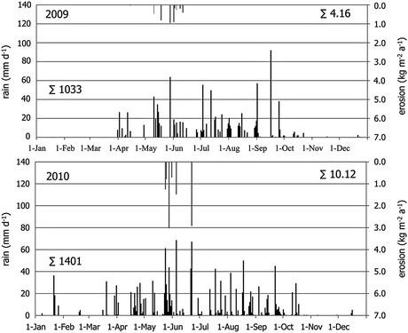
Fig. 2.16
Rainfall and erosion events for the years 2009 and 2010 in Chieng Khoi catchment, Yen Chau district, Son La province in north-west Vietnam
The areas’ soil properties led to moderate estimates of soil erodibility, with K factors ranging from 0.14 to 0.31 in Chieng Khoi and 0.17–0.34 in Muong Lum (Cong 2011); however, soils derived from siltstone, but not from limestone and clayey shale, frequently showed surface sealing, causing high run-off and erosion rates. This susceptibility to sealing was due to high silt content in combination with a lack of agents responsible for stabilizing soil aggregates such as soil organic matter and exchangeable bivalent cations.
The landscape of the study area is characterized by steep slopes, and both sites have a high proportion of steep land (>30 % inclination), values being 49 % in Chieng Khoi and 56 % in Muong Lum (see Table 2.16a). The area of cretaceous clastic sediments at lower altitudes is characterized by rounded hill tops sitting 150–250 m above the surrounding valleys, while in the limestone areas, the upper parts of the hills and mountains are very steep, show rock outcrops and are covered by natural forest. This structure is reflected in the high percentage (40 %) of very steep slopes (>50 %) in the Muong Lom catchment (Table 2.16a).
Table 2.16
(a) Slope classes, (b) definition of soil loss susceptibility classes/soil loss classes and the area of land use types, and (c) the soil loss class areas and the mean soil losses in Chieng Khoi and Muong Lum catchments, Yen Chau district in north-west Vietnam
Chieng Khoi | Muong Lum | |||
|---|---|---|---|---|
(a) Landform
| ||||
Slope (%) | Area (%) | |||
Sloping land | 8–16 | 5.9 | 6.5 | |
16–30 | 11.8 | 12.2 | ||
Steep land | 30–50 | 23.6 | 15.5 | |
>50 | 25.8 | 40.5 | ||
(b) Susceptibility to soil loss/amount of soil loss
| ||||
Soil loss | C factor | Land use types | Area of land use types (%) | |
Low | <0.1 | Forest, bush fallow, lake, paddy rice | 51.2 | 75.1 |
Moderate | 0.1–0.3 | Village, fruit trees | 15.0 | 8.1 |
High | >0.3 | Maize, cassava | 33.8 | 16.8 |
(c) Soil loss
| ||||
Soil loss classes | Area of soil loss classes (%) | |||
<20 | 68.2 | 86.1 | ||
20–100 | 23.6 | 10.7 | ||
>100 | 8.2 | 3.2 | ||
Mean of soil loss within catchment (t ha−1 year−1) | 51.7 | 16.3 | ||
Previously, the slopes were under traditional rain-fed stationary slash-and-burn agriculture, which did not use chemical fertilizers. The principal agricultural products on the slopes at this time were maize (Zea mays L.) and cassava (Manihot esculenta Crantz). However, triggered by population increase, resettlement and market development, land use has intensified over the last decade or so, connected with a reduction in and finally a demise of slash and burn practices and an increase in the erosive slope length (the L-factor of USLE). Common soil erosion patterns in the research area were found to include: (1) Sheet erosion and a dense net of small rills on hilltops and upper slopes, (2) an increasing depth of the rills on the mid-slopes, and (3) the development of deep gullies (down to 30 cm in depth) on the lower slopes – due to the increasing amounts and velocities of run-off during rain events, with intensities exceeding the infiltration capacity.
The resulting increased erosion rates have been caused, first of all, by a lack of soil cover at the beginning of the wet season. Erosion measurements on Wischmeier plots under maize (Fig. 2.16) and on a steep slope (30–38 % – for a detailed description of the experimental site, see Chap. 7), showed that severe erosion events happened only until the end of June, although intensive rain storms were observed until the end of the wet season in September. Erosion reduced after June because maize crops then covered the soil surface. Summarizing the impacts of the different erosion influencing factors by using the RUSLE equation (Cong 2011), the Muong Lum site revealed a moderate mean soil loss of 16.3 t ha−1 year−1, whereas Chieng Khoi revealed a moderate to high rate of 52 t ha−1 year−1 (see Table 2.16c). This was despite the fact that the proportion of very steep slopes, those with peak soil losses of up to 140 t ha−1 year−1, were much higher in Muong Lum. The high proportion of maize and cassava crops cultivated in Chieng Khoi, when compared to Muong Lum, explained this pattern, as these crops were being cultivated exclusively on sloping and steep land, contributing 57 (maize) and 147 (cassava) t ha−1 year−1 to overall soil losses. The measurement of soil erosion involves an elaborate process which is subject to methodological limitations and shows a huge variation in space and time, and Dung et al. (2008), in north-west Vietnam, measured an average of 20 t ha−1 year−1 of erosion in years when fields were cropped, while under secondary forest (fallow) the erosion rates were mostly in the range <1 t ha−1 year−1. Erosion measurements on the Wischmeier plots in Chieng Khoi and on the above mentioned site (30–38 % slope under maize) resulted in erosion rates of 42 and 101 t ha−1 year−1 in 2009 and 2010 respectively (Fig. 2.16). These rates exceeded those estimated by Cong (2011) for maize, but were in the range of the erosion amounts estimated for very steep terrains in general. We conclude; therefore, that using the RUSLE equation, erosion rates were not overestimated.
2.6.3 Effect of Erosion on Soil Fertility
Comparison of the nutrient stocks of undisturbed soils and arable land:
Stocks of Nt and available cations (S-value), as well as bulk density (BD) and soil organic carbon content (Corg) of the topsoil, were used as indicators for the impact of land use on soil fertility (Fig. 2.17). All the cultivated sites had a lower Corg content in the top layer when compared to the reference sites. Remarkably, in BD-L and in ML-C, bulk density increased (not in BD), with negative effects on air capacity, available water capacity and infiltration rates. The expected reduction in Nt stocks and S-values, as caused by erosion, was not verified on the 41 and 31 year-old maize plots in BD-C and ML-L, as in both cases, the topographic situation, con profiling and presence of foot slopes resulted in sedimentation. A deep transition horizon (Bt-Ah, at 14–30 cm depths) with a relatively high Corg content (20 mg kg−1) in BD-C, and a deep Ah horizon (at 4–40 cm depths) with a high Corg content (25.4 mg kg−1) in ML-L, provided proof of this assumption.
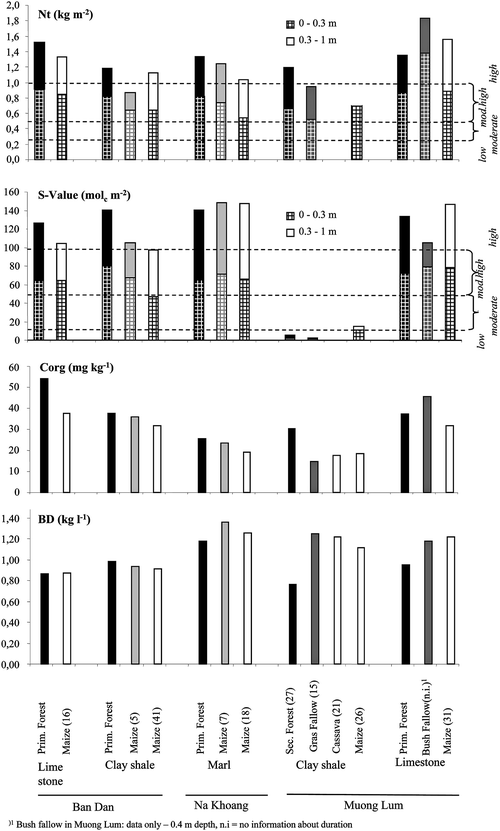
Fig. 2.17
Stocks of total Nitrogen (Nt) and available cations (S-value) at 0–0.3 and 0–1 m depths, and the organic Carbon content (Corg) and bulk density (BD) of the Ah and Ap horizons in soils derived from different parent materials, and under different land use activities (in brackets = duration of land use in years)
A statistical analysis of the data from the six reference sites (Fig. 2.18) revealed small standard deviations of the mean Corg (11.6 ± 2.3 kg/m2), Nt (1.3 ± 0.1 kg/m2) and S-value (134.7 ± 6.1 mol/m2). The number of observations was not enough to test for significant differences in the parent materials of the reference sites; therefore, the sites were grouped in order to test for the effect of deforestation and subsequent arable use on all the cultivated soils. The resulting statistical analysis revealed significantly (p < 0.05) higher stocks of Corg and Nt in the effective root space (by 41.6 and 44.2 % respectively) for the under forest sites (n = 6), when compared to the cultivated sites (n = 23). The loss of organic carbon was higher than the rates mentioned in the literature – between 22 % in Murty et al. (2002) and 40 % in Detwiler (1986), at an equilibrium level for the cultivated soils. This might have been due to the fact that these reviews regarded only top soils. The S-value was 28.2 % lower at the cultivated sites when compared to the undisturbed sites, though this was not significant.
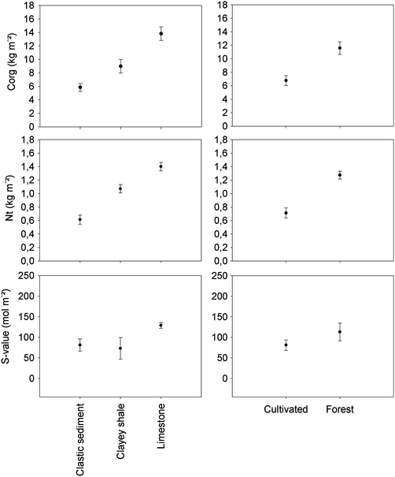
Fig. 2.18
Means and standard errors of organic Carbon stocks (Corg), total Nitrogen (Nt) and available cations (S-value) for soils derived from clastic sediments, clayey shales and limestone, and those in forested and cultivated sites in Yen Chau district, Son La province in north-west Vietnam
In contrast to the Corg, Nt and S-value results, bulk density varied greatly between the parent materials at the reference sites (0.97 g/cm3 on limestone, 0.81 g/cm3 on clayey shale and 1.18 g/cm3 on clastic sediment). These were not grouped for analysis, but the cultivated sites were compared individually based on each parent material. All the sites were subject to compaction after land use changed from forest to arable land, while bulk density was higher by 7 % in cultivated soils on limestone, 23 % on clayey shale and 18 % on clastic sediments, when compared to the reference sites. Compaction was thus observed between the reference sites and cultivated sites.
When grouping all the soil profiles according to parent material – limestone (n = 5), clayey shale (n = 5) and clastic sediment (n = 19) – significant differences were found in stocks of Corg, Nt and in bulk density. Stocks of Corg were highest in soils on limestone (13.8 ± 2.2 kg m−2), followed by soils on clayey shale (8.9 ± 2.2 kg m−2) and finally clastic sediments (5.8 ± 2.6 kg m−2). Stocks of Nt were highest in soils on limestone (1.4 ± 0.1 kg m−2), followed by soils on clayey shale (1.1 ± 0.1 kg m−2) and on clastic sediments (0.6 ± 0.3 kg m−2). Bulk density in the clastic sediments (1.4 ± 0.1 g/cm2) was significantly different when compared to the other two parent materials; however, between the limestone (1.0 ± 0.2 g/cm2) and clayey shale (0.9 ± 0.2 g/cm2) sites, bulk densities were not significantly different.
S-values were not significantly different between the parent materials and showed a large variation in the cases of clayey shale and clastic sediments. The S-values were highest on limestone (128.6 ± 15.5 mol m−2), followed by clastic sediments (81.1 ± 65.2 mol m−2) and clayey shale (72.8 ± 59.4 mol m−2). Comparisons according to land use change and parent material revealed that both variables were responsible for the degree of change in Corg, Nt, S-value and bulk density figures. As the variation among reference sites was not high for Corg and Nt, we conclude that land use change had a more pronounced influence on Corg and Nt stocks than did parent material. The negative impact of erosion on soil bulk density was strongest for soils derived from clastic sediments, followed by soils derived from clayey shale.
2.6.4 Properties of Soils at Different Slope Positions
The effects of erosion are best detected based on landform, e.g., rills and gullies, and soils exhibiting deposition, whereas soil profiles and the sequencing of horizons are less effective. At the case study sites, parent materials were found to be deeply weathered (saprolithe) and the solum thickness, even on steep slopes, was very deep in general (>18 dm) and only shallow (<6 dm) on hill tops. No E-Horizons were observed. The upper boundary of the argic horizons ranged from 12 to 16 cm in most cases, but in two soils on the upper and lower slopes of catena 2, those with soils derived from sandstone, it was only 5–6 cm. Buried horizons were found in two soils at the base slope position for catenas 1 and 2 (profiles: catena 2 – basal slope, catena 1 – basal slope/home garden), each having a colluvial horizon with a thickness of 12.5 and 18 cm respectively. The higher organic material content down to a depth of >80 cm for the home garden profile suggests that sedimentation is not an exception, but a frequently occurring process.
Changed soil organic matter content or stocks are a good indicator of chemical soil fertility dynamics; however, their use in evaluating the effects of erosion are limited because they are largely driven by litter addition and decomposition. Other chemical soil fertility parameters like the stock of available nutrients can explain erosion impacts only in part, because fertilization and crop uptake might superimpose these effects. Despite these limitations, an analysis of soils in the Chieng Khoi catchment was able to highlight some of the effects of soil erosion on soil fertility.
The texture of the soils in catena 2 was coarser when compared to that in catena 1 and at site 4, this being the reason for the lower effective rooting space (ERS; 90 cm and 100 cm respectively), higher air capacity (AC; 18 %, and 12–16 % respectively), as well as the lower plant available water capacity (AWC; mean 70, max. 105 l m−2, and mean 90, max. 115 l m−2 respectively). The effect of erosion on sedimentation could be observed only in the basal slope position of catena 1 under Mango (1 TS-M), where sedimentation led to a higher bulk density, a shallow ERS (80 cm), AC (4–7 %) and AWC (66 l m−2), when compared to the other soils in that catena (Fig. 2.19a).
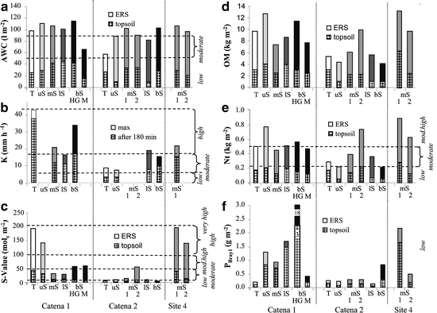
Fig. 2.19
(a) Plant available water capacity (AWC), (b) infiltration rates (K), (c) sum of exchange cations (S-value), (d) organic matter content (OM), (e) total nitrogen content (Nt), and (f) plant available phosphorus (P Bray1) of the soils in Chieng Khoi Commune. Thresholds are given on the basis of the FAO (2006). ERS effective rooting space, T top, uS upper slope, mS mid-slope, lS lower slope, bS basal slope, HG Home garden, M mango orchard. Numbers in columns give values exceeding the scale
After 3 h measuring, infiltration rates (K in mm h−1) were only high on the top of and in the basal slope area of catena 1, as well as at site 4 (Fig. 2.19b). Moderate values were found in the lower parts of catena 1 and across catena 2. At catena 2 this was despite the higher proportion of coarse pores in the sandy textured soils (9–19 Vol-%) when compared to all the other sites investigated (4–16 Vol-%). Infiltration rates decreased during the measuring time in most soils – quite drastically, and the reduction in K max (at the beginning of the experiment) and K min (after 3 h) amounted to between 30 % and 61 %. With a reduction of 11 % and 28 %, infiltration rates were more stable during the experiment in the soils of catena 1 (top slope) and site 4 (mid-slope). Both soils had a relatively high soil organic matter content in the top layer (12.6 and 15.9 g kg−1), proving the positive effects of soil organic matter on the stabilization of soil aggregates. The C and N content did not differ significantly between the soils (6–16 g C kg−1, 0.3–1.2 g N kg−1), but less eroded soils revealed the highest amounts in the top soil (11.6–15.9 g C kg−1, 1.0–1.2 g N kg−1). OM and N stocks were lower in the soils of catena 2 (around 5 kg C m−2, < 0.4 kg N m−2) than in the soils of catena 1 and at site 4 (up to 13 kg C m−2, 0.9 kg N m−2), but did not differ much within the catenas (Fig. 2.19d, e).
The serious impact of erosion on arable land could be studied at site 4, deforested only 7 years before, by comparing the two profiles at the mid-slope level, but with different inclinations and erosive lope lengths (Table 2.15). Assuming that at site 3 the OM stocks were equal at both profiles prior to deforestation, stocks of OM had reduced by erosion by 58 % at a rate of 3 mS-2 in the topsoil and by 26 % in the ERS during the previous 7 years – the greater susceptibility to erosion occurring due to the higher inclination and longer slope length. The S-values differed markedly between soils of different origins and degrees of erosion. In siltstone soils less affected by erosion (catena 1 T, uS and site 4) S-values were assessed as high and in soils derived from sandy parent materials and/or more affected by erosion (catena 2, catena 1 mS, lS) or sedimentation (bS position of catena 1 and 2), the S-values were moderate or low (Fig. 2.19c). The texture of the soils in the basal slope positions of both catenas was coarser and the C-content lower than on the upper slopes, indicating that during erosion events the clay fraction of the soils and organic substances, important for soil fertility, were transported further away in the catchment. A study of sediment effects on the fertility of paddy fields in Chieng Khoi (Schmitter et al.
2010) confirmed this deduction; the authors showed that only fine sediments originating from the irrigation system increased soil fertility, while sediment deposition originating from the erosion of surrounding cultivated slopes decreased it. Long-term fallow was expected to have a positive effect on soil fertility in general (Kubiniok 1999), and when comparing the two profiles in catena 2 (2 uS-1, 2 mS-2) – both left fallow for the last 57 years and showing similar characteristics in terms of depth of the ERS, AWC and erosion disposition – the importance of exchangeable cations for soil fertility was revealed. Soil profile 2 mS-2 exhibited considerably higher S-Values, because they were influenced by calcareous conglomerates, but also had higher amounts of OM and Nt than profile 2 uS-1, as derived from sandstone. These findings indicate that a sufficient cation supply is a prerequisite for increasing soil organic matter during fallow periods. Very low amounts of available phosphorus (P-Bray1) were found in all soils (ranging between 0.12 and 18 g m−2). In general, the highest P-Bray1 concentrations were found in A-horizons (up to 5.5 mg kg−1) and in the home gardens (1 TS HG; up to 43.1 mg kg−1). Lower P-Bray1 stocks were detected in catena 2 (Fig. 2.19f) than in catena 1.
Based on our observations and on the soil data, it can be deduced that beside available nutrients, soil organic matter plays a key role in soil fertility during the vicious cycle of events caused by soil erosion and soil fertility decline. Diminishing soil organic matter content due to erosion leads to a degradation of the soil’s physical properties, with aggregate stability – crucial for soils susceptible to soil sealing, like the soil derived from clastic sediments (CK-S) – being reduced (2). Compaction due to land use increase can cause a reduction in the number of coarse pores and in infiltration rates and a hardening of the soil structure, which makes intensive tillage necessary. Tillage in turn leads to a disruption in pore continuation and supplies loose, easily erodible soil material. The common praxis of burning plant residuals inhibits any increase in organic matter, despite the production of large amounts of organic material, plus reduces biological activity and therewith porosity. In the Chieng Khoi soils, a close relationship between organic matter (OM) content and the sum of total nitrogen, plant available phosphorus and S-values was found (Clemens et al. 2010), proving the importance of soil organic matter with respect to soil fertility.
2.6.5 Conclusion Regarding Soil Erosion
The study area is highly susceptible to erosion and all the cultivated soils are affected by it. Particularly land use intensification is associated with reduced fallow periods and the continuous cultivation of crops and fosters therefore erosion susceptibility. In respect of the necessity to develop a more sustainable land use system, the following factors need to be considered. The susceptibility of soils with regard to erosion depends mostly on the parent material, and soil organic matter content plays a key role in improving soil conditions. Annual crops are the most critical cultivars, because they leave the soil surface partly or part of the time unprotected, particularly at the beginning of the wet season, resulting in splash and soil sealing. Increasing the erosive slope length increases the amount and velocity of overland flows, making mid- and lower slopes the most erosion prone terrain positions. Even if fertilizers are able to compensate for the nutrients lost through erosion, the sustainable cultivation of annual crops on steep slopes under monsoonal climates is barely attainable, and is only possible if measures are taken to avoid the negative impacts of the actual land system shown here. A combination of reduced erosive slope length and an increase in the stocks of soil organic matter are considered to be necessary measures. Several experiments within the research area have shown that it is possible to reduce erosion and increase soil fertility without using additional fertilizer inputs (see Chap. 3).
Acknowledgements
This research was carried out within the framework of the Uplands Program (SFB 564), as funded by the Deutsche Forschungsgemeinschaft (DFG). We would like to thank Dirk Euler for his advice on the use of statistics and Chackapong Chaiwong for his help in understanding the soils present in the Chiang Mai basin. We should also thank Thomas Hilger for his comments on an earlier version of this manuscript, Gary Morrison for reviewing and editing the English content, and Peter Elstner for helping with the layout. We are also very grateful to the villagers of Bor Krai, Huai Bong and Mae Sa Mai for their cooperation and support.
Open Access. This chapter is distributed under the terms of the Creative Commons Attribution Non-commercial License, which permits any noncommercial use, distribution, and reproduction in any medium, provided the original author(s) and source are credited.
References
Ali AMS (2003) Farmers’ knowledge of soils and sustainability of agriculture in a saline water ecosystem in Southwestern Bangladesh. Geoderma 111:333–353CrossRef
Anderson-Mayes A-M (1997) Harnessing spatial analysis with GIS to improve interpretation of airborne geophysical data. Conference proceedings of GeoComputation ‘97 & SIRC’97. Geo Comput 97:15–24
IAEA (International Atomic Energy Agency) (2003) Guidelines for radioelement mapping using gamma ray spectrometry data. IAEA-TECDOC-1363 Vienna, Austria. Available online: http://www-pub.iaea.org/mtcd/publications/pdf/te_1363_web.pdf. Accessed 15 Jan 2012
Bao NX (ed) (2004) Geology and mineral resources map of Viet Nam, (F-48-XXVII), scale 1:200.000, Dep. of Geology and Mining, Viet Nam, 145 pp
Barrera-Bassols N, Zink JA (2003) Ethnopedology: a worldwide view on the soil knowledge of local people. Geoderma 111:171–195CrossRef
Beckett KA (2007) Multispectral analysis of high spatial resolution 256-channel radiometrics for soil and regolith mapping. Dissertation, Curtin University of Technology, Australia
Bierwirth P, Brodie RS (2005) Identifiying acid sulfate soil hotspots from airborne gamma-radiometric data and GIS analysis. Bureau of Rural Sciences, Canberra
Blume HP, Deller B, Leschber R, Paetz A, Schmidt S, Wilke B-M (Red.) (2000 ff. Handbuch der Bodenuntersuchung, Wiley-VCH, Beuth Verlag, Berlin
Blume HP, Stahr K, Leinweber P (2011) Bodenkundliches Praktikum, 3rd edn. Spektrum Akad, Verlag, Heidelberg, 267 ppCrossRef
Breiman L (2001) Random forests. Mach Learn 45:5–32CrossRef
Breiman L, Friedman JH, Olshen RA, Stone CJ (1984) Classification and regression trees. Wadsworth International group, California, United States of America, 358 pp
Chambers R (1992) Rural appraisal: rapid, relaxed and participatory. Institute of Development Studies (University of Brighton). IDS Discussion paper No. 331, Sussex
Chaplot VAM, Rumpel C, Valentin V (2005) Water erosion impact on soil and carbon redistributions within uplands of Mekong River. Global Biogeochem Cycles 19:20–32CrossRef
Clemens G, Fiedler S, Cong ND, Dung NV, Schuler U, Stahr K (2010) Soil fertility affected by land use history, relief position, and parent material under a tropical climate in NW-Vietnam. Catena 81:87–96CrossRef
Cong ND (2011) SOTER database for land evaluation procedure: A case study in two small catchments of Northwest Vietnam. Hohenheimer Bodenkundliche Hefte 101, 165 pp
Cook SE, Corner RJ, Groves PR, Grealish GJ (1996) Use of airborne gamma radiometric data for soil mapping. Aust J Soil Res 34:183–194CrossRef
Dent D (2007) Environmental geophysics mapping salinity and water resources. Int J Appl Earth Obs Geoinf 9:130–136CrossRef
Detwiler RP (1986) Land use change and the global carbon cycle: the role of tropical soils. Biogeochemistry 2:67–93CrossRef
Dickson BL, Scott KM (1997) Interpretation of aerial gamma-ray surveys – adding the geochemical factors. Aust Geol Geop 17(2):187–200
Dickson BL, Fraser SJ, Kinsey-Henderson A (1996) Interpreting aerial gamma-ray surveys utilising geomorphological and weathering models. J Geochem Explor 57:75–88CrossRef
Dung ND (2010) Study of infiltration ability of soils under main forms of utilization in Chieng Khoi commune, Yen Chau district. M.Sc. thesis, code 60.62.15, MOET, MARD, VAAS, Hanoi, 127 pp, in Vietnamese
Dung NV, Vien TD, Lam NT, Tuong TM, Cadisch G (2008) Analysis of the sustainability within the composite swidden agroecosystem in northern Vietnam. 1. Partial nutrient balances and recovery times of upland fields. Agric Ecosyst Environ 128:37–51CrossRef
Ericksen PJ, Ardón M (2003) Similarities and differences between farmer and scientist views on soil quality issues in central Honduras. Geoderma 111:233–248CrossRef
Ettema CH (1994) Indigenous soil classifications. What are their structure and function and how do they compare with scientific soil classifications. Institute of Ecology, University of Georgia, Athens
FAO (1995) Global and national soils and terrain digital databases (SOTER). World soil resources reports 74, Rome
FAO (2006) Guidelines for soil description, 4th edn. FAO, Rome, p 97
German Geological Mission (GGM) (1979) Geological map of Northern Thailand 1:250.000. Federal Institute for Geosciences and Natural Resources (BGR), Germany
GISTDA (2007) SPOT 5 images; SPOT-5 K-J: 255–312, 06-11-2006, SPOT-5 K-J: 255–311, Date: 01-12-2006, SPOT-5 K-J: 255–313, 22-12-2007
GLFC (2007) Landsat ETM+, WRS-2, Path 131, Row 047, Date: 2000-03-05, EarthSat, Ortho, GeoCover Myanmar (Burma), Thailand. http://glcf.umiacs.umd.ed
Gregory AF, Horwood JL (1961) A laboratory study of gamma-ray spectra at the surface of rocks. Department of Energy, Mines & Resources, Ottawa, Mines Branch Research Report R85
Gunn J (ed) (2004) Encyclopedia of caves and karst sciences. Fitzroy Dearborn, London, 902 pp
Gunn PJ, Minty BRS, Milligan PR (1997) The airborne gamma-ray spectrometric response over arid Australian terranes. In: Gubins AG (ed) Proceedings of exploration 97: fourth decennial international conference on mineral exploration. Radiometric methods and remote sensing paper 96, pp 733–740. Available online: http://dmec.ca/ex07-dvd/Decennial%20Proceedings/Expl97/08_02___.pdf. Accessed 18 Jan 2012
Haering V, Clemens G, Sauer D, Stahr K (2008) Soil related constrains affecting the sustainability of land use in a mountain area in Northern Vietnam. Die Erde 141:235–253
Hagel H (2011) Local soil knowledge in Vietnam’s northern mountainous region A case study among different ethnic groups. M.Sc. thesis, University of Hohenheim, Stuttgart
Hendricks CA (1981) Soil-vegetation relations in the North Continental Highland Region of Thailand: a preliminary investigation of soil vegetation correlation. Technical bulletin, No. 32, Soil Survey Division, Department of Land Development, Ministry of Agriculture and Cooperatives
Herrmann L (ed) (2005) Das kleine Bodenkochbuch (Version 2005). Institute of Soil Science and Land Evaluation/University of Hohenheim, Stuttgart
Herrmann L, Anongrak N, Zarei M, Schuler U, Spohrer K (2007) Factors and processes of gibbsite formation in northern Thailand. Catena 71:279–291CrossRef
Hoffmann V (2010) Problem- und nutzergerecht kommunizieren. Grundüberlegungen zum Wissensmanagement. Lecture notes, Department 430A, University of Hohenheim, Germany
IUSS Working Group WRB (eds) (2006) World reference base for soil resources 2006. 2nd edn. World Soil Resources Reports No. 103. FAO, Rome
Jahn R (1997) Bodenlandschaften subtropischer mediterraner Zonen. In: Blume HP, Felix-Henningsen P, Frede HG, Guggenberger G, Horn R, Stahr K (eds) Handbuch der Bodenkunde. 34. Erg. Lfg., Wiley-VCH, Weinheim
Koch M (2010) Analyse und Bewertung der Bodenfruchtbarkeit von Standorten in drei Höhenstufen der tropischen Bergregion Nordwest-Vietnams. Diploma thesis, Institute for Soil Science and Land Evaluation (310a), University of Hohenheim, Stuttgart
Krasilnikov PV, Tabor JA (2003) Perspectives on utilitarian ethnopedology. Geoderma 111:197–215CrossRef
Kubiniok J (1999) Reliefentwicklung, Pedogenese und geoökologische Probleme agrarischer Nutzung eines tropischen Berglandes – das Beispiel Nordthailand. Zeitschrift für Geomorphologie, Neue Folge, Supplementband 117, Borntraeger, Berlin/Stuttgart
Land Development Department of Thailand (1979) Soil survey report in the Chiang Mai Province. Land Development Department of Thailand, Bangkok
Land Development Department of Thailand (2007) Soil survey report in the Chiang Mai Province. Land Development Department of Thailand, Bangkok
Liaw A (2012) Package ‘random forest’ http://cran.r-project.org/web/packages/randomForest/randomForest.pdf. 21 Aug 2012
Liaw A, Wiener M (2002) Classification and regression by random forest. R News 2(3):18–22
Maier R (2010) Bodenfruchtbarkeit in Abhängigkeit der wirtschaftlichen Situation von Hmong-Kleinbauern in der Provinz Son La im Bergland Nordvietnams. M.Sc. thesis, Institute for Soil Science and Land Evaluation (310a), University of Hohenheim, Stuttgart
McBratney AB, Mendonça Santos ML, Minasny B (2003) On digital soil mapping. Geoderma 117:3–53CrossRef
Minh TT (2010) Agricultural innovation systems in Vietnam’s northern mountainous region. Six decades shift from a supply-driven to a diversification-oriented system. Margraf Publishers, Weikersheim
Mouret C (2004) Karst in Southeast Asia. In: Gunn J (ed) Encyclopedia of cave and karst science. Fritzroy Dearborn, London, pp 100–104
Murty D, Kirschbaum MUF, McMurtrie RE, McGilvray H (2002) Does conversion of forest to agricultural land change soil carbon and nitrogen? A review of the literature. Glob Chang Biol 8:105–123CrossRef
Nguyen TV (ed) (2005) Geological and mineral resources map of Vietnam 1:200.000. Van Yen F-48-XXVII, Hanoi
Nguyet VTM (2006) Hydrogeological characterisation and groundwater protection of tropical mountainous karst areas in NW Vietnam. VUB – Hydrogeologie 48, 152p
Niemeijer D, Mazzucato V (2003) Moving beyond indigenous soil taxonomies: local theories of soils for sustainable development. Geoderma 111:403–424CrossRef
Oudwater N, Martin A (2003) Methods and issues in exploring local knowledge of soils. Geoderma 111:387–401CrossRef
Pansak W, Hilger TH, Dercon G, Kongkaew T, Cadisch G (2008) Changes in the relationship between soil erosion and N loss pathways after establishing soil conservation systems in uplands of Northeast Thailand. Agric Ecosyst Environ 128:167–176CrossRef
Payton RW, Barr JJF, Martin A, Sillitoe P, Deckers JF, Gowig JW, Hatibu N, Naseem SB, Tenywa M, Zuberi MI (2003) Contrasting approached to integrating indigenous knowledge about soils and scientific soil survey in East Africa and Bangladesh. Geoderma 111:335–386CrossRef
Pracilio G, Adams ML, Smettem KRJ, Harper RJ (2006) Determination of spatial distribution patterns of clay and plant available potassium contents in surface soils at the farm scale using high resolution gamma ray spectrometry. Plant Soil 282:67–82CrossRef
Renard KG, Foster GR, Weesies GA, McCool DK, Yoder DC (1997) Predicting soil erosion by water: a guide to conservation planning with the revised universal soil loss equation (RUSLE). Agric. Handbook., vol 703. US Department of Agriculture, Washington, DC
Ripley B (2012) Package ‘RODBC’. Available online http://cran.r-project.org/web/packages/RODBC/RODBC.pdf
Royal Thai Survey Department (1976) Topographic maps, 1:50.000. Royal Thai Survey Department, Bangkok
Sang N (2011) Assessment of different soil fertility and household income of the small scale farmers in Yen Chau district, Son La Province, North-West Vietnam. M.Sc. thesis, Institute for Soil Science and Land Evaluation (310a), University of Hohenheim, Stuttgart
Schlichting E, Blume HP, Stahr K (1995) Bodenkundliches Praktikum. Pareys Studientexte 81, Berlin
Schmitter P, Dercon G, Hilger T, Thi Le Ha T, Huu Thanh N, Lam N, Duc Vien T, Cadisch G (2010) Sediment induced soil spatial variation in paddy fields of Northwest Vietnam. Geoderma 155:298–307CrossRef
Schuler U (2008) Towards regionalisation of soils in northern Thailand and consequences for mapping approaches and upscaling procedures. Hohenheimer Bodenkundliche Hefte 89, University of Hohenheim, Stuttgart
Schuler U, Choocharoen C, Elstner P, Neef A, Stahr K, Zarei M, Herrmann L (2006) Soil mapping for land-use planning in a karst area of N Thailand with due consideration of local knowledge. J Plant Nutr Soil Sci 169:444–452CrossRef
Schuler U, Herrmann L, Ingwersen J, Erbe P, Stahr K (2010) Comparing mapping approaches at subcatchment scale in northern Thailand with emphasis on the maximum likelihood approach. Catena 81:137–171CrossRef
Schuler U, Erbe P, Zarei M, Rangubpit W, Surinkum A, Stahr K, Herrmann L (2011) A gamma-ray spectrometry approach to field separation of illuviation-type WRB reference soil groups in northern Thailand. J Plant Nutr Soil Sci 174:536–544. doi:10.1002/jpln.200800323
CrossRef
Sys C, Van Ranst E, Debaveye J (1993) Land evaluations, part I-III: principles in land evaluation and crop production calculation. General Administration for Development Cooperation, Brussels, Belgium
Talawar S, Rhoades RE (1998) Scientific and local classification management of soils. Agric Hum Val 15:3–14CrossRef
Tin Kam Ho (ed) (1995) Random decision forests. In: Proceedings of the 3rd international conference on document analysis and recognition, Montreal, 14–18 Aug 1995, pp 278–282
Toan TD, Podwojewski D, Orange ND, Phuong ND, Phai DD, Bayer A, Thiet NV, Ring PV, Renaud J, Koikas J (2004) Effect of land use and land management on water budget and soil erosion in a small catchment in Northern part of Vietnam. In: Kheoruenromne I, Riddell JA, Soitong K (eds) Proceedings of SSWM 2004. Innovative practices for sustainable sloping lands and watershed management, Chiang Mai, pp 109–122
Toledo VM (2000) Biodiversity and indigenous peoples. In: Levin SA (ed) Encyclopedia of biodiversity, vol 3. Elsevier, New York, pp 451–463
Tulyatid R, Rangubpit W (2004) Airborne geophysical data and its implication on surface mapping and land management. In: Eswaran H (ed) Innovative techniques in soil survey: developing the foundation for a new generation of soil resource inventories and their utilization. Land Development Department, Bangkok, pp 75–86
Unsworth ER, Jones P, Hill SJ (2002) The effect of thermodynamic data on computer model predictions of uranium speciation in natural water systems. J Environ Monit 4:528–532CrossRef
Vien TD (2003) Culture, environment, and farming systems in Vietnam’s northern mountain region. Southe Asian Stud 41:180–205
Vijarnsorn P, Eswaran H (2002) The soil resources of Thailand. Land Development Department, Thailand, USDA, Natural Resources Conservation Service, USA 264 p
Warber M (2008) Eigenschaften charakteristischer Böden im Bergland von Nordthailand. Diploma thesis, Institut für Bodenkunde und Standortslehre (310), University of Hohenheim, Stuttgart
Warburton H, Martin A (1999) Local peoples’ knowledge: its contribution to natural resource research and development. Socio-economic methodologies for natural resources research. Natural Resources Institute, Chatham, United Kingdom Available online http://www.nri.org/publications/bpg/bpg05.pdf. Accessed 20 Jan 2011
Warren DM (1991) Using Indigenious Knowledge in Agricultural Development. World Bank discussion paper 127, The World Bank, Washington D.C. Cited in: Agrawal A (1995) Dismantling the divide between indigenous and scientific knowledge. Develop Change 26(3):413–439
Weller U (2002) Land evaluation and land use planning for Southern Benin (West Africa) BENSOTER. Hohenheimer Bodenkundliche Hefte 76, University of Hohenheim, Stuttgart
Wezel A, Steinmüller N, Friedrichsen R (2002) Slope position effects on soil fertility and crop productivity and implications for soil conservation in upland northwest Vietnam. Agric Ecosyst Environ 91:113–126CrossRef
Wilford J, Minty B (2007) The use of airborne gamma-ray imagery for mapping soils and understanding landscape processes. Dev Soil Sci 31:207–220CrossRef
Wischmeier WH, Smith DD (1978) Predicting rainfall erosion losses – a guide to conservation planning. Agriculture Handbook No. 537, U.S. Department of Agriculture, Washington, DC
Zhu AX, Hudson B, Burt J, Lubich K, Simonson D (2001) Soil mapping using GIS, expert knowledge, and fuzzy logic. Sci Soc Am J 65:1463–1472CrossRef
Footnotes
2
This section was written by Ludger Herrmann, Ulrich Schuler, Petra Erbe, Wanida Rangubpit, Adichat Surinkum and Karl Stahr.
3
This section was prepared by Ulrich Schuler, Petra Erbe, Michael Bock, Jan Willer, Joachim Ingwersen, Karl Stahr and Ludger Herrmann.
4
This section was prepared by Gerhard Clemens, Ulrich Schuler, Heinrich Hagel, Bui Le Vinh and Karl Stahr.
5
An example of this can be found in a report of farmers in Yên Châu district commune participating in a workshop in 2009, who said there was pressure on the commune to replace a 7 year-old teak plantation on a hill top, planted as part of a re-forestation program, with a rubber plantation. This pressure to grow rubber in Son La province took place before any feasibility study had been carried out.
6
This section was written by Karl Stahr, Ulrich Schuler, Petra Erbe, Mehdi Zarei, Gerhard Clemens, Volker Haering and Ludger Herrmann.
7
This section was prepared by Gerhard Clemens, Volker Häring, Nguyen Dinh Cong, Vu Dinh Tuan and Karl Stahr.